[!IMPORTANT] Mundo 8 · Técnicas de projeto · Rota do jogo: etapa 27 de 29
Missão: guardar subproblemas repetidos para ganhar velocidade.
Vem de: Módulo 20 · Divisão e conquista e algoritmos gulosos. Segue para: Módulo 24 · Busca de padrões em texto.
Checkpoints desta fase:
- Ler os assuntos 0138 a 0143 e refazer os exemplos
- Resolver os 4 exercícios de cada assunto, escrevendo o código sozinho
- Fechar a lista prática (P2101 a P2130)
- Enfrentar os desafios do módulo
- Chefão: resolver as questões de prova do módulo sem consultar
A programação dinâmica (PD) anota a resposta de cada subproblema na primeira vez e consulta nas seguintes. Toda PD tem uma recorrência, uma tabela e uma volta que reconstrói a solução: troco, mochila 0/1, LCS, distância de edição e um mini-diff. Depende da recursão (módulo 04) e dos gulosos (módulo 20): quando o guloso erra, a PD testa todas as escolhas.
Revise recursão (0032 e 0033), matrizes (0039), strings (0041 e 0042) e memória dinâmica (0054 e 0055). O troco guloso (0133) e a mochila fracionária (0135) são o ponto de partida do 0139 e do 0140.
Os exemplos usam matriz fixa (#define MAX 50) para deixar a recorrência à
vista; o mini-diff põe a tabela no heap. A cadeia de matrizes tem assunto
próprio: o 0185.
Nas tabelas, roxa é a célula calculada (ou de onde a volta parte), verde a escolhida ou o caminho da solução, amarela a opção que perdeu e cinza o que não chega a ser usado.
| # | Assunto |
|---|---|
| 0138 | Memoização |
| 0139 | Troco com programação dinâmica |
| 0140 | Mochila 0/1 |
| 0141 | Maior subsequência comum (LCS) |
| 0142 | Distância de edição |
| 0143 | Juntando tudo: um mini-diff |
[!NOTE] Cada assunto é um capítulo: Conceito (a explicação), Exemplos de uso (programas que compilam sozinhos: rode com o comando abaixo de cada um e compare com a saída no fim do código) e Exercícios (cada um é um arquivo em
material/com o esqueleto, as dicas e o espaço para a resposta; resoluções em_respostas/21-programacao-dinamica/).
Você vai subir 35 degraus a pé, de um em um ou de dois em dois. De quantos jeitos diferentes dá para chegar ao topo? Contar na mão é impossível, e a pergunta esconde a ideia que guia o módulo inteiro.
Pense no último passo. Para pisar no degrau n, você veio do degrau
n - 1, com um passo simples, ou do n - 2, com um passo duplo. Então o
número de jeitos de chegar a n é a soma dos jeitos de chegar a cada um
desses dois: formas(n) = formas(n - 1) + formas(n - 2), com formas(0) = formas(1) = 1. É a recorrência de Fibonacci, que você viu no assunto 0033.
Escrita como recursão pura, essa função é exponencial. formas(35) faz
quase 30 milhões de chamadas, porque formas(33) é calculada duas vezes,
formas(32) três, e assim por diante, numa avalanche de contas repetidas
(TENENBAUM; LANGSAM; AUGENSTEIN, 1995, cap. 3). E só existem 36 perguntas
diferentes, de formas(0) a formas(35). O desperdício é refazer conta
pronta. A saída é anotar cada resposta na primeira vez e consultar nas
próximas, como quem cola um lembrete na geladeira.
Essa é a programação dinâmica (PD): resolver um problema combinando as respostas de subproblemas que se repetem, calculando cada um uma vez só (CORMEN et al., 2024, cap. 14). O nome engana. "Programação" aqui não quer dizer escrever código; quer dizer planejamento, preencher uma tabela, no sentido antigo da palavra.
A PD exige duas condições do problema. A primeira é a subestrutura
ótima: a resposta do problema sai das respostas ótimas de problemas
menores do mesmo tipo (CORMEN et al., 2024, cap. 14). Nos degraus, a resposta
de n sai das de n - 1 e n - 2. A segunda é ter subproblemas
sobrepostos: os problemas menores se repetem ao longo da recursão
(CORMEN et al., 2024, cap. 14). É ela que separa a PD da divisão e conquista
(0131). As metades do merge sort nunca se repetem, e guardar a resposta
delas não economizaria nada.
Há dois jeitos de anotar. Na memoização (de memo, lembrete), você
mantém a recursão como está e acrescenta um vetor memo[]. Antes de
calcular, a função consulta o vetor; se a resposta já está lá, devolve na
hora; se não, calcula, anota e devolve. Ela resolve de cima para baixo
(top-down): parte do problema grande e desce só até os subproblemas de
que precisa (LINTZMAYER; MOTA, 2023).
long long formas_memo(int n) {
if (n <= 1) return 1;
if (memo[n] != -1) return memo[n]; // já sei: devolve
memo[n] = formas_memo(n - 1) + formas_memo(n - 2);
return memo[n];
}
O outro jeito é a tabela. Você joga a recursão fora e enche um vetor
num laço, do menor subproblema para o maior: t[0], t[1], depois t[2]
a partir deles, e assim até t[n]. Ela resolve de baixo para cima
(bottom-up): quando chega a vez de t[i], tudo de que ele depende já está
pronto (CORMEN et al., 2024, cap. 14). O Cormen chama as duas versões de
top-down with memoization e bottom-up method.
Com as anotações, formas(35) cai de 29 860 703 chamadas para 69 na
memoização e 34 voltas de laço na tabela. A conta de custo vale para toda
PD: número de subproblemas × trabalho de cada um. Aqui são 35
subproblemas com uma soma cada, O(n), contra o crescimento exponencial da
recursão pura (TENENBAUM; LANGSAM; AUGENSTEIN, 1995, cap. 3).
As duas versões têm o mesmo custo de tempo, mas diferem na pilha. A
memoização ainda é recursiva e empilha um frame por chamada aberta, então
formas_memo(100000) estouraria a pilha. A tabela é um laço comum, sem
chamadas (FEOFILOFF, 2009). A memoização ganha quando só uma parte dos
subproblemas é necessária, porque ela calcula só essa parte.
[!WARNING] O valor de "ainda não calculei" deve ser impossível como resposta (aqui,
-1). Com0e 0 sendo resposta válida, cada célula 0 é recalculada e o tempo volta a ser exponencial, com a resposta certa.
Subir 35 degraus de um em um ou de dois em dois: pelo último passo,
formas(n) = formas(n - 1) + formas(n - 2), com formas(0) = formas(1) = 1.
Com 5 degraus e memo, as chamadas verdes calculam e anotam, as amarelas acham
a resposta pronta e o cinza deixa de existir:
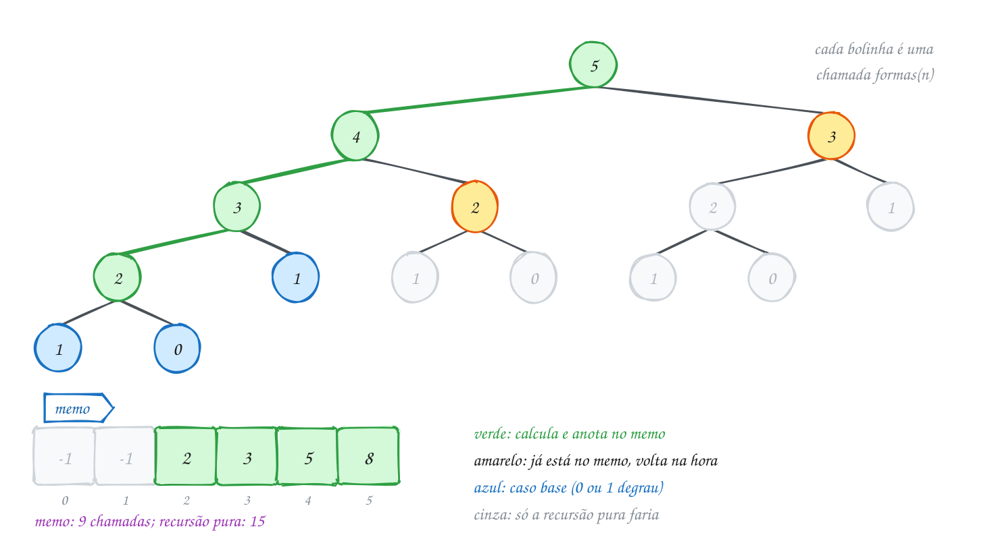
#include <stdio.h>
#define MAX 50
long long chamadas = 0; // conta quantas vezes a função foi chamada
// recursão pura: formas de subir n degraus, de 1 em 1 ou de 2 em 2
long long formas_rec(int n) {
chamadas++;
if (n <= 1) {
return 1; // 0 ou 1 degrau: um jeito só
}
return formas_rec(n - 1) + formas_rec(n - 2);
}
long long memo[MAX + 1]; // memo[n] == -1: ainda não sei
// de cima para baixo: a mesma recursão, consultando o memo antes
long long formas_memo(int n) {
chamadas++;
if (n <= 1) {
return 1;
}
if (memo[n] != -1) {
return memo[n]; // já calculei: só consulta
}
memo[n] = formas_memo(n - 1) + formas_memo(n - 2);
return memo[n];
}
// de baixo para cima: enche a tabela do menor para o maior
long long formas_tabela(int n) {
long long t[MAX + 1];
t[0] = 1;
t[1] = 1;
for (int i = 2; i <= n; i++) {
t[i] = t[i - 1] + t[i - 2]; // os dois já estão prontos
}
return t[n];
}
int main(void) {
int degraus = 35;
chamadas = 0;
long long r = formas_rec(degraus);
printf("recursão pura: %lld formas, %lld chamadas\n", r, chamadas);
for (int i = 0; i <= MAX; i++) {
memo[i] = -1;
}
chamadas = 0;
r = formas_memo(degraus);
printf("memoização: %lld formas, %lld chamadas\n", r, chamadas);
r = formas_tabela(degraus);
printf("tabela: %lld formas, %d voltas no laço\n", r, degraus - 1);
return 0;
}
// Saída:
// recursão pura: 14930352 formas, 29860703 chamadas
// memoização: 14930352 formas, 69 chamadas
// tabela: 14930352 formas, 34 voltas no laço
De 29.860.703 para 69 chamadas: 35 somas, O(n), contra O(1,6ⁿ) da recursão pura. No fluxograma, quem já está no memo volta sem chamar ninguém:
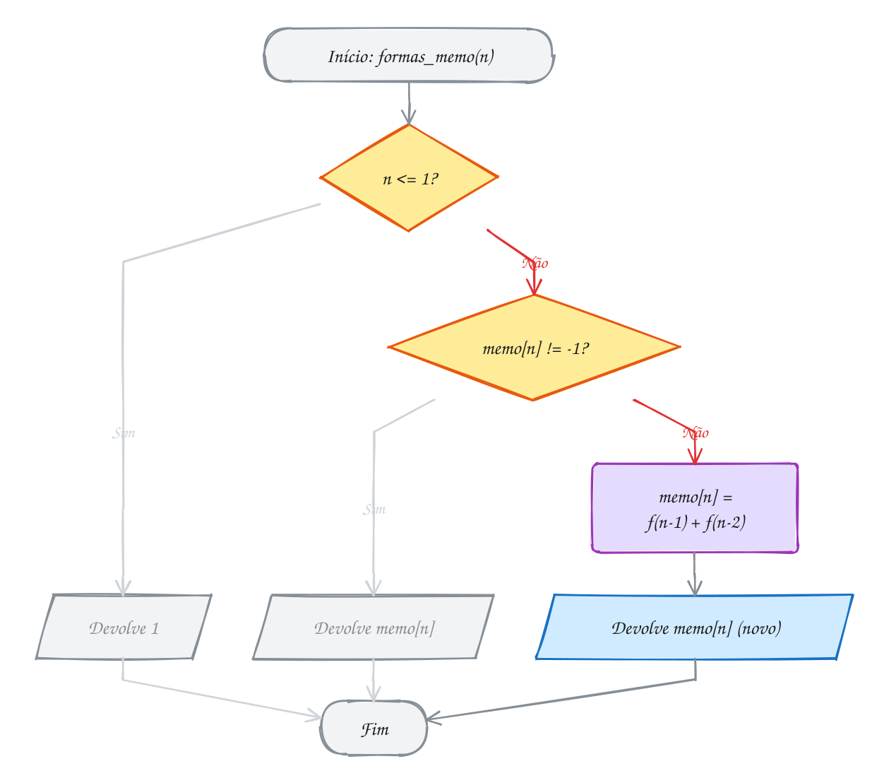
Versão de baixo para cima, para 5 degraus. Cada linha usa as duas anteriores:
| i | t[i - 2] | t[i - 1] | t[i] |
|---|---|---|---|
| 0 | 1 (base) | ||
| 1 | 1 (base) | ||
| 2 | 1 | 1 | 2 |
| 3 | 1 | 2 | 3 |
| 4 | 2 | 3 | 5 |
| 5 | 3 | 5 | 8 |
São 8 jeitos: 11111, 2111, 1211, 1121, 1112, 221, 212, 122.
Exemplo A275 · Quantas rotas o entregador tem até o cliente
#include <stdio.h>
#define LIN 5
#define COL 6
// O entregador sai do cruzamento do canto de cima à esquerda e vai até o de
// baixo à direita, andando só para a direita (leste) ou para baixo (sul).
// Dois cruzamentos estão fechados por obra (marcados com 1).
int main(void) {
int obra[LIN][COL] = {
{0, 0, 0, 0, 0, 0},
{0, 0, 1, 0, 0, 0},
{0, 0, 0, 0, 1, 0},
{0, 0, 0, 0, 0, 0},
{0, 0, 0, 0, 0, 0},
};
long long rotas[LIN][COL];
// rotas[i][j] = de quantos jeitos se chega no cruzamento (i, j):
// ou vindo de cima (i - 1, j), ou vindo da esquerda (i, j - 1)
for (int i = 0; i < LIN; i++) {
for (int j = 0; j < COL; j++) {
if (obra[i][j]) {
rotas[i][j] = 0; // ninguém passa por aqui
} else if (i == 0 && j == 0) {
rotas[i][j] = 1; // a saída: um jeito, ficar parado
} else {
long long de_cima = (i > 0) ? rotas[i - 1][j] : 0;
long long da_esquerda = (j > 0) ? rotas[i][j - 1] : 0;
rotas[i][j] = de_cima + da_esquerda;
}
}
}
for (int i = 0; i < LIN; i++) {
for (int j = 0; j < COL; j++) {
if (obra[i][j]) {
printf(" X");
} else {
printf("%4lld", rotas[i][j]);
}
}
printf("\n");
}
printf("Rotas até o cliente: %lld (sem as obras seriam 126)\n", rotas[LIN - 1][COL - 1]);
return 0;
}
// Saída:
// 1 1 1 1 1 1
// 1 2 X 1 2 3
// 1 3 3 4 X 3
// 1 4 7 11 11 14
// 1 5 12 23 34 48
// Rotas até o cliente: 48 (sem as obras seriam 126)
gcc ~/LPEDC/material/A275.c -o ~/LPEDC/material/A275 && ~/LPEDC/material/A275
Exemplo A276 · Duas variáveis bastam (até o long long acabar)
#include <limits.h>
#include <stdio.h>
// formas de subir n degraus de 1 ou 2 em 2, de baixo para cima, guardando só
// os dois últimos valores: O(1) de memória em vez de um vetor de n posições
int main(void) {
long long dois_atras = 1; // formas(0)
long long um_atras = 1; // formas(1)
int n = 1;
while (1) {
// a próxima soma cabe no long long? confere ANTES de somar
if (um_atras > LLONG_MAX - dois_atras) {
break;
}
long long atual = um_atras + dois_atras;
dois_atras = um_atras; // a janela anda um degrau:
um_atras = atual; // o velho "um atrás" vira "dois atrás"
n++;
if (n == 10 || n == 50 || n == 90) {
printf("formas(%d) = %lld\n", n, um_atras);
}
}
printf("o último que cabe: formas(%d) = %lld\n", n, um_atras);
printf("formas(%d) passaria de LLONG_MAX = %lld\n", n + 1, LLONG_MAX);
return 0;
}
// Saída:
// formas(10) = 89
// formas(50) = 20365011074
// formas(90) = 4660046610375530309
// o último que cabe: formas(91) = 7540113804746346429
// formas(92) passaria de LLONG_MAX = 9223372036854775807
gcc ~/LPEDC/material/A276.c -o ~/LPEDC/material/A276 && ~/LPEDC/material/A276
Exercício E823 · ★☆☆
Na escadaria da igreja da cidade, os adolescentes sobem de 1, de 2 ou de 3 degraus por vez. São 10 degraus. Escreva um programa que calcula, de baixo para cima, quantos jeitos existem de subir 0, 1, 2, ..., 10 degraus, num vetor t[], e mostre a tabela inteira e a resposta.
Saída esperada:
t: 1 1 2 4 7 13 24 44 81 149 274
Jeitos de subir 10 degraus: 274
Exercício E825 · ★★☆
Um motorista de aplicativo cruza o centro da cidade de um canto ao outro, andando só para a direita (D) ou para baixo (B). Cada quarteirão tem um pedágio de estacionamento rotativo, em reais, que ele paga ao passar (inclusive o da saída e o da chegada):
3 1 4 2 5
2 7 1 8 2
6 1 3 2 4
5 2 9 1 3
Escreva um programa que calcula, de baixo para cima, a matriz custo[i][j] (o menor gasto da saída até o quarteirão (i, j)) e mostre o menor custo até o canto de baixo à direita. Depois, refaça o caminho de trás para a frente e mostre a sequência de letras D e B, da saída até a chegada.
Saída esperada:
Menor custo: R$ 18
Caminho: DDBBDBD
Exercício E826 · ★★☆
A feira de domingo tem 8 vagas de barraca enfileiradas, numeradas de 0 a 7. Você tem barracas suficientes, mas a prefeitura proíbe montar em duas vagas VIZINHAS. O lucro estimado de cada vaga, em reais, é:
vaga: 0 1 2 3 4 5 6 7
lucro: 40 25 60 30 10 55 35 20
Escreva um programa que calcula, de baixo para cima, melhor[i] = o maior lucro usando só as vagas 0..i, mostre o vetor, o lucro máximo e quais vagas usar.
Saída esperada:
melhor: 40 40 100 100 110 155 155 175
Lucro máximo: R$ 175
Barracas: 0 2 5 7
Exercício E828 · ★★★
Na Mega-Sena você escolhe 6 dezenas entre 60. O número de jogos possíveis é C(60, 6), e a recorrência do triângulo de Pascal calcula isso sem fatorial nenhum (60! não cabe em tipo nenhum do C):
C(n, k) = C(n - 1, k - 1) + C(n - 1, k), com C(n, 0) = C(n, n) = 1
(a dezena n entra no jogo ou não entra). A recursão pura faria 2 x C(60, 6) - 1, uns 100 milhões de chamadas. Escreva a função
long long comb(int n, int k)
com memoização numa matriz memo[61][61] e um contador global de chamadas. Calcule C(60, 6) e depois, zerando o contador mas SEM limpar o memo, C(60, 30). No fim, conte quantas posições do memo foram preenchidas.
Saída esperada:
Mega-Sena: C(60, 6) = 50063860 (649 chamadas)
chance de acertar com um jogo: 1 em 50063860
C(60, 30) = 118264581564861424 (1441 chamadas novas)
subproblemas guardados no memo: 1044
Nos Correios, o balcão só tem selos de R$ 1, R$ 4 e R$ 5, e a sua carta custa R$ 8 de porte. Você quer colar o menor número de selos que somam exatamente R$ 8. É o problema do troco mínimo: dado um conjunto de valores, achar o menor número de peças que somam exatamente um total (CORMEN et al., 2024, cap. 14).
O atendente guloso do assunto 0133 pega o maior selo que cabe, R$ 5, e
completa com três de R$ 1: quatro selos. Dois selos de R$ 4 resolvem com
dois. É o mesmo tropeço das fichas {1, 3, 4} de lá: o sistema não é
canônico, e a escolha que parece melhor agora estraga o resto. O guloso
aposta numa escolha e não volta atrás. A PD (0138) não aposta: ela testa
todas as escolhas, mas sem repetir trabalho.
O raciocínio é o mesmo dos degraus: olhe para o último selo colado. Ele
foi de R$ 1, de R$ 4 ou de R$ 5. Antes dele, sobrou um valor menor, que já
foi pago com o mínimo de selos. Então, chamando de dp[v] o menor número de
selos que somam exatamente v reais, vale dp[v] = 1 + mín(dp[v - s]),
tomando o mínimo sobre cada selo s que cabe em v, isto é, com s ≤ v. O
caso base é dp[0] = 0: pagar zero não pede selo nenhum (LINTZMAYER; MOTA,
2023).
Veja a conta para R$ 8. Se o último selo foi de R$ 1, antes sobraram 7, e
dp[7] = 3, total 4. Se foi de R$ 4, sobraram 4, e dp[4] = 1, total 2. Se
foi de R$ 5, sobraram 3, e dp[3] = 3, total 4. O menor é 2, pelo selo de
R$ 4. Para essa conta funcionar, dp[7], dp[4] e dp[3] precisam estar
prontos antes, e por isso a tabela se enche de v = 1 até o total.
Por que olhar só o último selo basta? Pela subestrutura ótima. Tire o
último selo de uma solução ótima para v: o que sobra é uma solução para
v - s, e ela também é ótima. Se não fosse, daria para trocá-la por uma
melhor e melhorar a solução de v inteira, o que contradiz ela ser ótima
(CORMEN et al., 2024, cap. 14).
A tabela dp diz quantos selos, mas não quais. Para isso, guarde
num segundo vetor, ultimo[v], o selo que deu o mínimo em cada v. Depois,
ande para trás: comece em v, anote ultimo[v], vá para v - ultimo[v] e
repita até chegar a 0 (ZIVIANI, 2010, cap. 2). Para R$ 8, ultimo[8] = 4
leva a v = 4, e ultimo[4] = 4 leva a 0: dois selos de R$ 4.
Alguns valores podem ser impossíveis. Com selos de R$ 4 e R$ 5 apenas, não dá para pagar R$ 3. A célula de um valor impossível guarda um "infinito", um número maior que qualquer resposta de verdade, e ele nunca vence a comparação do mínimo.
O custo segue a regra da PD: total subproblemas, cada um testando k
selos, dá O(total × k) de tempo e O(total) de memória (LINTZMAYER; MOTA,
2023). Para totais altos, a tabela pesa. Um milhão de int são 4 MB, e
dp e ultimo juntos já batem nos 8 MB da pilha padrão do Linux. Aloque
os vetores com malloc (assunto 0054) (KERNIGHAN; RITCHIE, 1989).
[!WARNING] O "infinito" precisa sobreviver a um
+ 1. ComINT_MAX, a contadp[v - selo[s]] + 1estoura oint. Use1000000,total + 1ou testedp[v - selo[s]] != INFantes de somar.
Nos Correios só há selos de R$ 1, R$ 4 e R$ 5, e a carta custa R$ 8. O guloso
cola 5 + 1 + 1 + 1, quatro selos; dois de R$ 4 bastam. No desenho, dp[8] olha
três vizinhos e escolhe o menor, o dp[4]:
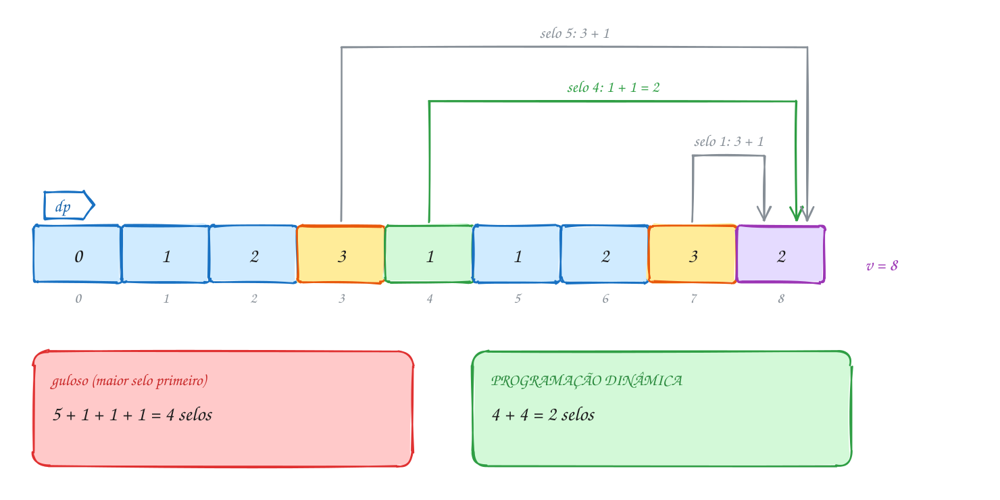
#include <stdio.h>
#define MAX 100
#define INF 1000000 // "impossível": maior que qualquer resposta de verdade
// dp[v] = menor número de selos que somam exatamente v reais
// ultimo[v] = o selo usado por último nessa solução
void minimo_selos(const int selo[], int k, int total, int dp[], int ultimo[]) {
dp[0] = 0; // R$ 0: nenhum selo
for (int v = 1; v <= total; v++) {
dp[v] = INF;
for (int s = 0; s < k; s++) {
// se o último selo for selo[s], antes dele faltavam v - selo[s]
if (selo[s] <= v && dp[v - selo[s]] + 1 < dp[v]) {
dp[v] = dp[v - selo[s]] + 1;
ultimo[v] = selo[s];
}
}
}
}
int main(void) {
int selo[] = {1, 4, 5}; // valores, em reais
int porte = 8;
int dp[MAX + 1], ultimo[MAX + 1];
minimo_selos(selo, 3, porte, dp, ultimo);
printf("v: ");
for (int v = 0; v <= porte; v++) {
printf(" %2d", v);
}
printf("\ndp:");
for (int v = 0; v <= porte; v++) {
printf(" %2d", dp[v]);
}
printf("\n%d selos para R$ %d:", dp[porte], porte);
for (int v = porte; v > 0; v -= ultimo[v]) { // volta pelo último selo
printf(" %d", ultimo[v]);
}
printf("\n");
return 0;
}
// Saída:
// v: 0 1 2 3 4 5 6 7 8
// dp: 0 1 2 3 1 1 2 3 2
// 2 selos para R$ 8: 4 4
O laço de fora anda pelos valores e o de dentro testa cada selo como "o último":
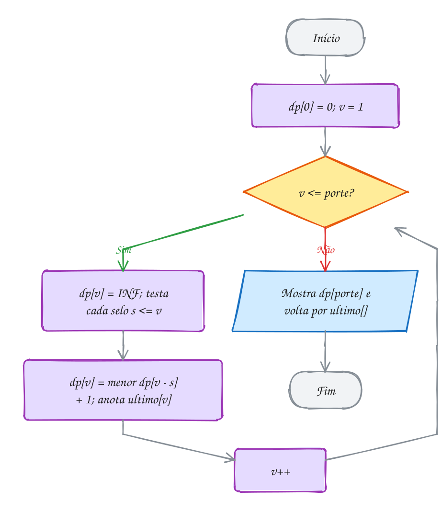
As três últimas células. Cada coluna é um selo testado como último; o mínimo
da linha vira dp[v]:
| v | selo 1: dp[v - 1] + 1 | selo 4: dp[v - 4] + 1 | selo 5: dp[v - 5] + 1 | dp[v] | ultimo[v] |
|---|---|---|---|---|---|
| 6 | dp[5] + 1 = 2 | dp[2] + 1 = 3 | dp[1] + 1 = 2 | 2 | 1 |
| 7 | dp[6] + 1 = 3 | dp[3] + 1 = 4 | dp[2] + 1 = 3 | 3 | 1 |
| 8 | dp[7] + 1 = 4 | dp[4] + 1 = 2 | dp[3] + 1 = 4 | 2 | 4 |
Em v = 6 os selos 1 e 5 empatam. Como o teste é <, fica o primeiro que
achou o mínimo.
Exemplo A277 · De quantos jeitos dá para pagar R$ 1,00 em moedas
#include <stdio.h>
#define TOTAL 100 // centavos
int main(void) {
int moeda[] = {5, 10, 25, 50};
int k = 4;
long long jeitos[TOTAL + 1];
// jeitos[v] = quantas COMBINAÇÕES de moedas somam v centavos.
// Laço de fora nas moedas: cada combinação é contada uma vez só, na ordem
// "primeiro as de 5, depois as de 10, ...".
for (int v = 0; v <= TOTAL; v++) {
jeitos[v] = 0;
}
jeitos[0] = 1; // somar 0: um jeito, não usar moeda nenhuma
printf("Combinações para pagar R$ 1,00:\n");
for (int m = 0; m < k; m++) {
for (int v = moeda[m]; v <= TOTAL; v++) {
jeitos[v] += jeitos[v - moeda[m]]; // usa mais uma moeda[m]
}
printf(" usando moedas até %2d centavos: %3lld\n", moeda[m], jeitos[TOTAL]);
}
// Laços trocados: o de fora nos valores. Agora 5 + 10 e 10 + 5 contam
// separado: são as SEQUÊNCIAS de moedas jogadas na máquina, uma a uma.
long long sequencias[TOTAL + 1];
sequencias[0] = 1;
for (int v = 1; v <= TOTAL; v++) {
sequencias[v] = 0;
for (int m = 0; m < k; m++) {
if (moeda[m] <= v) {
sequencias[v] += sequencias[v - moeda[m]]; // a última moeda foi moeda[m]
}
}
}
printf("com a ordem importando: %lld sequências\n", sequencias[TOTAL]);
return 0;
}
// Saída:
// Combinações para pagar R$ 1,00:
// usando moedas até 5 centavos: 1
// usando moedas até 10 centavos: 11
// usando moedas até 25 centavos: 29
// usando moedas até 50 centavos: 40
// com a ordem importando: 27517 sequências
gcc ~/LPEDC/material/A277.c -o ~/LPEDC/material/A277 && ~/LPEDC/material/A277
Exemplo A278 · Os pedidos que a pastelaria não consegue fechar
#include <stdio.h>
#define MAX 60
int main(void) {
// a pastelaria só vende caixas fechadas de 6, 9 ou 20 pastéis
int caixa[] = {6, 9, 20};
int k = 3;
int inf = MAX + 1; // nunca se usa mais que MAX caixas: MAX + 1 é "impossível"
int dp[MAX + 1]; // dp[v] = menor número de caixas com exatamente v pastéis
dp[0] = 0;
for (int v = 1; v <= MAX; v++) {
dp[v] = inf;
for (int c = 0; c < k; c++) {
// só aproveita um resto que tem solução: inf + 1 não é solução
if (caixa[c] <= v && dp[v - caixa[c]] != inf && dp[v - caixa[c]] + 1 < dp[v]) {
dp[v] = dp[v - caixa[c]] + 1;
}
}
}
printf("Pedidos impossíveis:");
int maior = 0;
for (int v = 1; v <= MAX; v++) {
if (dp[v] == inf) {
printf(" %d", v);
maior = v;
}
}
// de 44 a 49 tudo dá; somando caixas de 6, todo pedido acima de 43 dá
printf("\nMaior pedido impossível: %d\n", maior);
int pedidos[] = {15, 29, 44, 60};
for (int i = 0; i < 4; i++) {
printf("%2d pastéis: %d caixas\n", pedidos[i], dp[pedidos[i]]);
}
return 0;
}
// Saída:
// Pedidos impossíveis: 1 2 3 4 5 7 8 10 11 13 14 16 17 19 22 23 25 28 31 34 37 43
// Maior pedido impossível: 43
// 15 pastéis: 2 caixas
// 29 pastéis: 2 caixas
// 44 pastéis: 4 caixas
// 60 pastéis: 3 caixas
gcc ~/LPEDC/material/A278.c -o ~/LPEDC/material/A278 && ~/LPEDC/material/A278
Exercício E829 · ★☆☆
A loja de ferragens vende parafusos só em pacotes fechados de 3, 7 e 11 unidades. Um marceneiro precisa de exatamente 25 parafusos e quer levar o menor número de pacotes. Escreva um programa que monta a tabela dp[v] (o menor número de pacotes com exatamente v parafusos) de 0 a 25. Mostre as quantidades de 1 a 25 que são impossíveis e a resposta para 25.
Saída esperada:
Impossíveis até 25: 1 2 4 5 8
Menor número de pacotes para 25 parafusos: 3
Exercício E831 · ★★☆
Num jogo de celular, a loja vende pacotes de 1, 6 e 10 gemas. Escreva um programa que calcula dp[v], o menor número de pacotes para cada total v de 1 a 20 gemas, e guarda em ultimo[v] o último pacote usado. Mostre os pacotes da solução de 12 gemas.
Escreva também int guloso(int v), que sempre pega o maior pacote que cabe, e mostre, para v de 1 a 20, os totais em que o guloso usa MAIS pacotes que a PD, no formato "v: guloso g, PD d".
Saída esperada:
12 gemas: 2 pacotes (6 6)
12: guloso 3, PD 2
13: guloso 4, PD 3
14: guloso 5, PD 4
15: guloso 6, PD 5
18: guloso 4, PD 3
19: guloso 5, PD 4
Exercício E832 · ★★☆
Você vai pagar um lanche de R$ 7 com moedas de R$ 1, cédulas de R$ 2 e cédulas de R$ 5. Duas perguntas diferentes:
a) Quantas COMBINAÇÕES de dinheiro somam R$ 7? (5 + 2 e 2 + 5 são a mesma) b) A máquina de autoatendimento aceita uma nota ou moeda por vez. Quantas
SEQUÊNCIAS diferentes de inserção somam R$ 7? (5 + 2 e 2 + 5 contam
separado)
Escreva as funções long long combinacoes(int total) e long long sequencias(int total), cada uma com o seu vetor de PD, e mostre as duas respostas.
Saída esperada:
combinações: 6
sequências: 26
Exercício E834 · ★★★
A máquina de café do escritório custa R$ 1,00, aceita moedas de 5, 10, 25 e 50 centavos, mas trava se você colocar mais de 6 moedas. Quantas combinações de moedas pagam exatamente R$ 1,00 com até 6 moedas? Mostre também quantas usam exatamente 1, 2, ..., 6 moedas.
Um vetor jeitos[v] não basta: ele não sabe quantas moedas cada combinação usou. Acrescente essa informação como uma segunda dimensão: w[q][v] = combinações com EXATAMENTE q moedas que somam v centavos.
Saída esperada:
exatamente 1 moeda: 0
exatamente 2 moedas: 1
exatamente 3 moedas: 1
exatamente 4 moedas: 1
exatamente 5 moedas: 1
exatamente 6 moedas: 3
até 6 moedas: 7 combinações
Um vendedor ambulante tem um isopor que aguenta 7 kg e quatro opções para levar à praia: um fardo de água (2 kg, lucro de R$ 18), uma caixa de refrigerante (3 kg, R$ 24), uma caixa de suco (4 kg, R$ 30) e um pote de açaí (5 kg, R$ 35). Cada coisa vai inteira ou não vai: ninguém leva meia caixa de suco. O que ele põe no isopor para lucrar o máximo?
Esse é o problema da mochila 0/1. Há uma capacidade W e n itens,
cada um com peso e lucro, e cada item vai inteiro (1) ou fica de fora (0).
O objetivo é o maior lucro sem passar de W (CORMEN et al., 2024, seção
15.2). Como cada item tem duas opções, são 2ⁿ escolhas possíveis. Para 50
itens, testar todas está fora de cogitação.
Na mochila fracionária (assunto 0135), o guloso pelo lucro por quilo resolvia. Aqui ele erra (CORMEN et al., 2024, seção 15.2). Pela razão, a água (R$ 9/kg) vem antes do refrigerante (R$ 8/kg). Os dois juntos pesam 5 kg e dão R$ 42, e nada mais cabe nos 2 kg que sobram. Mas refrigerante e suco pesam exatamente 7 kg e dão R$ 54. O guloso deixou espaço vazio, e como não dá para partir o suco, esse espaço virou prejuízo.
A PD (0138) olha um item de cada vez e pergunta: o último item, o de
número i, vai ou não vai? Se não vai, o lucro é o melhor que os itens de 1
a i - 1 conseguem com a mesma capacidade c. Se vai, e só pode ir se
peso[i] <= c, o lucro é lucro[i] mais o melhor que os itens de 1 a
i - 1 conseguem no espaço que sobrou, c - peso[i]. A resposta é a maior
das duas (KLEINBERG; TARDOS, 2006, cap. 6).
Para guardar essas respostas, a tabela é uma matriz. A célula t[i][c] é o
maior lucro usando só os itens de 1 a i, com capacidade c. A recorrência
fica: t[i][c] é o maior entre t[i-1][c] e lucro[i] + t[i-1][c - peso[i]], este último só quando o item cabe. A linha 0, sem nenhum item, é
toda zero. A resposta fica no canto de baixo, em t[n][W] (KLEINBERG;
TARDOS, 2006, cap. 6). No isopor, t[3][7] escolhe entre não levar o suco
(t[2][7] = 42) e levar (30 + t[2][3] = 30 + 24 = 54), e fica com 54.
A tabela diz o lucro, mas não o que levar. A recuperação responde
isso andando de baixo para cima, a partir de t[n][W]. Em cada linha, compare
t[i][c] com a célula de cima, t[i-1][c]. Se forem iguais, o item i não
fez diferença e ficou de fora. Se mudou, o item i foi junto, e a busca
segue na linha de cima com a capacidade reduzida, c - peso[i] (ZIVIANI,
2010, cap. 2). No isopor, o açaí não muda nada e fica; o suco muda e vai, e
a capacidade cai para 3; o refrigerante muda e vai, e ela cai para 0.
O custo é o tamanho da tabela: (n + 1) × (W + 1) células, cada uma
preenchida em tempo constante, ou seja, O(n × W). Parece polinomial, mas
há uma pegadinha. W é um número, e um número se escreve com uns log₂ W
bits. Dobrar o tamanho da entrada, de 20 para 40 bits, eleva W ao
quadrado. Por isso esse custo se chama pseudopolinomial: é polinomial
no valor de W, não no tamanho da entrada. A mochila 0/1 continua
NP-difícil (assunto 0186) (LINTZMAYER; MOTA, 2023).
[!WARNING] Na recuperação, o teste é "o valor mudou?", e não "dá para levar?". E confira
peso[i] <= cantes de lert[i - 1][c - peso[i]]: com índice negativo, o C lê outra linha da matriz sem avisar.
Um ambulante tem um isopor de 7 kg: água (2 kg, R$ 18), refri (3 kg, R$ 24),
suco (4 kg, R$ 30) e açaí (5 kg, R$ 35). O guloso leva água e refri (R$ 42);
refri e suco dão R$ 54. No desenho, t[3][7] = 54 (roxo) escolheu entre não
levar o suco (amarelo) e levar (verde):
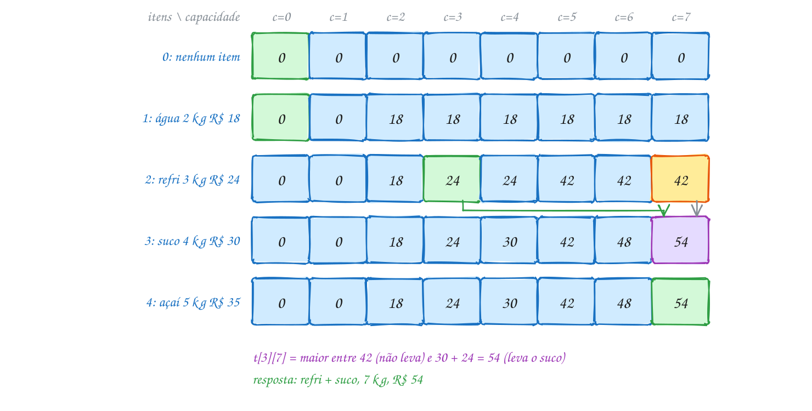
Os vetores começam no índice 1, para casar com a linha 0 da tabela:
#include <stdio.h>
#define N 4 // itens
#define W 7 // capacidade do isopor, em kg
int main(void) {
const char *nome[N + 1] = {"", "água", "refri", "suco", "açaí"};
int peso[N + 1] = {0, 2, 3, 4, 5}; // kg (o índice 0 não é usado)
int lucro[N + 1] = {0, 18, 24, 30, 35}; // reais
int t[N + 1][W + 1];
// t[i][c] = maior lucro usando só os itens 1..i com capacidade c
for (int c = 0; c <= W; c++) {
t[0][c] = 0; // nenhum item: lucro 0
}
for (int i = 1; i <= N; i++) {
for (int c = 0; c <= W; c++) {
t[i][c] = t[i - 1][c]; // não leva o item i
if (peso[i] <= c && lucro[i] + t[i - 1][c - peso[i]] > t[i][c]) {
t[i][c] = lucro[i] + t[i - 1][c - peso[i]]; // leva o item i
}
}
}
for (int i = 0; i <= N; i++) {
printf("i=%d:", i);
for (int c = 0; c <= W; c++) {
printf(" %2d", t[i][c]);
}
printf("\n");
}
printf("Lucro máximo: R$ %d\n", t[N][W]);
// volta pela tabela: se o valor mudou de i - 1 para i, o item i foi junto
printf("Leva:");
int c = W;
for (int i = N; i >= 1; i--) {
if (t[i][c] != t[i - 1][c]) {
printf(" %s (%d kg)", nome[i], peso[i]);
c -= peso[i]; // o que sobrou para os anteriores
}
}
printf("\n");
return 0;
}
// Saída:
// i=0: 0 0 0 0 0 0 0 0
// i=1: 0 0 18 18 18 18 18 18
// i=2: 0 0 18 24 24 42 42 42
// i=3: 0 0 18 24 30 42 48 54
// i=4: 0 0 18 24 30 42 48 54
// Lucro máximo: R$ 54
// Leva: suco (4 kg) refri (3 kg)
O fluxograma mostra a decisão de uma célula; o caminho marcado é o de
t[3][7]:
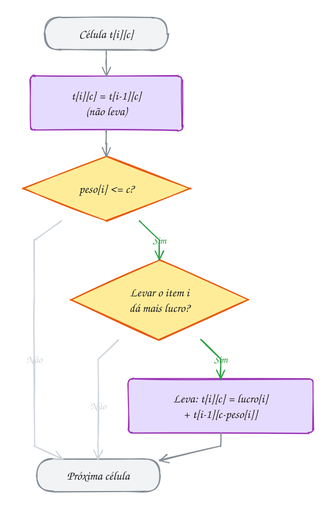
A recuperação, partindo do canto t[4][7]:
| i | c | t[i][c] | t[i-1][c] | Mudou? | Decisão | c depois |
|---|---|---|---|---|---|---|
| 4 (açaí) | 7 | 54 | 54 | não | fica | 7 |
| 3 (suco) | 7 | 54 | 42 | sim | leva | 7 - 4 = 3 |
| 2 (refri) | 3 | 24 | 18 | sim | leva | 3 - 3 = 0 |
| 1 (água) | 0 | 0 | 0 | não | fica | 0 |
Exemplo A279 · O pen drive com uma linha só de tabela
#include <stdio.h>
#define N 4
#define CAP 16 // GB livres no pen drive
int tamanho[N] = {5, 4, 7, 3}; // GB de cada videoaula
int nota[N] = {30, 24, 40, 20}; // o quanto cada uma interessa
const char *nome[N] = {"A", "B", "C", "D"};
// mochila 0/1 com UM vetor: melhor[c] faz o papel da linha "de cima".
// O laço de c DESCE: assim melhor[c - tamanho] ainda é o valor da linha
// anterior, sem o item i.
int mochila_descendo(void) {
int melhor[CAP + 1] = {0};
for (int i = 0; i < N; i++) {
for (int c = CAP; c >= tamanho[i]; c--) {
int com_i = nota[i] + melhor[c - tamanho[i]];
if (com_i > melhor[c]) {
melhor[c] = com_i;
}
}
}
return melhor[CAP];
}
// O MESMO código com o laço subindo: melhor[c - tamanho] já pode ter usado
// o item i nesta mesma volta. O item vira infinito (mochila "ilimitada").
int mochila_subindo(int copias[]) {
int melhor[CAP + 1] = {0};
int ultimo[CAP + 1];
for (int c = 0; c <= CAP; c++) {
ultimo[c] = -1;
}
for (int i = 0; i < N; i++) {
for (int c = tamanho[i]; c <= CAP; c++) {
int com_i = nota[i] + melhor[c - tamanho[i]];
if (com_i > melhor[c]) {
melhor[c] = com_i;
ultimo[c] = i;
}
}
}
// conta quantas vezes cada item entrou (anda pelo último item escolhido)
for (int c = CAP; c > 0 && ultimo[c] != -1; c -= tamanho[ultimo[c]]) {
copias[ultimo[c]]++;
}
return melhor[CAP];
}
int main(void) {
// o certo: A + B + C = 16 GB, nota 94; cada aula entra uma vez só
printf("laço descendo (0/1): nota %d\n", mochila_descendo());
int copias[N] = {0};
printf("laço subindo: nota %d, com", mochila_subindo(copias));
for (int i = 0; i < N; i++) {
if (copias[i] > 0) {
printf(" %s x%d", nome[i], copias[i]);
}
}
printf("\n");
return 0;
}
// Saída:
// laço descendo (0/1): nota 94
// laço subindo: nota 104, com B x1 D x4
gcc ~/LPEDC/material/A279.c -o ~/LPEDC/material/A279 && ~/LPEDC/material/A279
Exemplo A280 · A conta do mercado dividida ao meio
#include <stdbool.h>
#include <stdio.h>
#define N 7
#define MAXS 200
// Dois amigos racharam as compras, mas cada item vai inteiro para a casa de
// um deles. Quem leva o quê, para os dois gastos ficarem o mais perto
// possível? É uma mochila 0/1 em que o "lucro" é o próprio preço: a
// pergunta vira "que somas dá para formar com um subconjunto?".
int main(void) {
const char *item[N + 1] = {"", "carne", "arroz", "café", "queijo",
"frutas", "sabão", "pão"};
int preco[N + 1] = {0, 41, 23, 17, 35, 28, 12, 9}; // reais (índice 0 sem uso)
int total = 0;
for (int i = 1; i <= N; i++) {
total += preco[i];
}
// pode[i][s] == true: algum subconjunto dos itens 1..i soma exatamente s
static bool pode[N + 1][MAXS + 1]; // static: começa tudo false
pode[0][0] = true; // nenhum item soma 0
for (int i = 1; i <= N; i++) {
for (int s = 0; s <= total; s++) {
pode[i][s] = pode[i - 1][s] ||
(preco[i] <= s && pode[i - 1][s - preco[i]]);
}
}
// a melhor divisão: a maior soma possível que não passa da metade
int alvo = total / 2;
while (!pode[N][alvo]) {
alvo--;
}
printf("Total R$ %d: um paga R$ %d, o outro R$ %d\n", total, alvo, total - alvo);
// recuperação: se a soma já era possível sem o item i, ele fica de fora
printf("Leva para a casa 1:");
int s = alvo;
for (int i = N; i >= 1; i--) {
if (!pode[i - 1][s]) { // sem o item i não dava: ele entra
printf(" %s", item[i]);
s -= preco[i];
}
}
printf("\n");
return 0;
}
// Saída:
// Total R$ 165: um paga R$ 81, o outro R$ 84
// Leva para a casa 1: café arroz carne
gcc ~/LPEDC/material/A280.c -o ~/LPEDC/material/A280 && ~/LPEDC/material/A280
Exercício E835 · ★☆☆
Uma padaria tem R$ 10 mil para investir e cinco projetos. Cada projeto é feito inteiro ou não é feito (0/1). Custos e retornos em mil reais:
projeto custo retorno por ano
1 fachada nova 4 9
2 site de pedidos 3 7
3 curso da equipe 2 4
4 forno novo 5 11
5 vitrine refrig. 1 2
Escreva um programa que monta a tabela t[i][c] (maior retorno usando os projetos 1..i com c mil reais) e mostre a última linha da tabela e o retorno máximo com os R$ 10 mil.
Saída esperada:
última linha: 0 2 4 7 9 11 13 16 18 20 22
Retorno máximo com R$ 10 mil: R$ 22 mil por ano
Exercício E837 · ★★☆
Véspera de vestibular: você tem 6 horas de estudo e uma estimativa de quantos pontos cada revisão completa rende. Cada matéria é revisada inteira ou não é revisada:
matéria horas pontos
Matemática 2.5 30
Português 1.5 18
História 1.0 10
Física 2.0 25
Química 1.5 16
Inglês 0.5 6
O problema: a tabela da mochila precisa de capacidades INTEIRAS, e as horas são double. Guarde as horas como double no programa, converta tudo para meias horas (unidades inteiras) e resolva a mochila 0/1 com recuperação. Mostre o máximo, as matérias e as horas usadas.
Saída esperada:
Máximo: 73 pontos em 6.0 h
Estudar: Física Português Matemática
Horas usadas: 6.0
Exercício E838 · ★★☆
Sua carteira tem estas cédulas: 2, 5, 5, 10, 10, 20, 20 e 50 reais. Você precisa separar exatamente R$ 30 para o rateio do churrasco. De quantos jeitos dá para escolher as cédulas? Cada cédula é um papel diferente: as duas notas de 20 contam como escolhas distintas.
Resolva com PD num vetor só (jeitos[s] = quantos subconjuntos das cédulas vistas até agora somam s) e confira o resultado com a força bruta por bits do assunto 0125, testando os 2^8 subconjuntos.
Saída esperada:
PD: 7 jeitos de separar R$ 30
força bruta: 7 jeitos (256 subconjuntos testados)
Exercício E840 · ★★★
Um drone de entregas carrega até 10 kg E até 8 litros de volume no compartimento. Há seis pacotes esperando, cada um com peso, volume e o frete que paga:
pacote peso (kg) volume (L) frete (R$)
1 3 4 25
2 4 2 30
3 2 3 18
4 5 3 40
5 1 2 9
6 3 3 22
Agora há DUAS capacidades. Estenda a ideia da mochila 0/1 para uma tabela de três dimensões, t[i][p][v] = maior frete usando os pacotes 1..i com até p kg e v litros. Mostre o frete máximo, os pacotes (do último para o primeiro, como sai da volta pela tabela), o peso e o volume usados, e confira o valor com uma força bruta pelos 2^6 subconjuntos.
Saída esperada:
Frete máximo: R$ 79
Pacotes: 5 4 2
Usa 10 kg e 7 L
Força bruta: R$ 79
Você ditou MORANGO e o seu sobrinho escreveu MANGA. Quantas letras ele acertou na ordem certa? Comparar posição por posição não serve, porque um erro no começo desalinha o resto. A pergunta certa é: qual a maior sequência de letras que aparece nas duas palavras, na mesma ordem, mesmo com outras letras no meio? Aqui é MANG, quatro letras. A mesma pergunta compara versões de um arquivo e trechos de DNA.
Uma subsequência de uma string é o que sobra depois de apagar algumas
letras dela, sem mudar a ordem das que ficam (CORMEN et al., 2024, cap. 14).
MNG é subsequência de MORANGO: apague O, R, A e O. GNA não é, porque
em MORANGO o G vem depois do N e do A. A maior subsequência comum
(longest common subsequence, LCS) de duas strings é a mais comprida que é
subsequência das duas ao mesmo tempo (CORMEN et al., 2024, cap. 14).
Testar todas não dá. Cada letra pode ficar ou sair, então uma palavra de 30
letras tem 2³⁰, mais de um bilhão, de subsequências (CORMEN et al., 2024, cap.
14). A PD (0138) resolve olhando só a última letra de cada string. Se as
duas forem iguais, essa letra pode fechar a LCS: a resposta é 1 mais a
LCS das duas strings sem a última letra. Se forem diferentes, pelo menos
uma delas não entra na LCS. Então tire a última de a ou a última de b,
resolva cada caso e fique com o melhor (CORMEN et al., 2024, cap. 14).
Cada passo encurta uma string ou as duas, e o que sobra são sempre
prefixos, os começos das strings. Daí a tabela: c[i][j] é o tamanho da
LCS do prefixo de a com i letras, a[0..i-1], com o prefixo de b com
j letras, b[0..j-1]. Com m e n letras nas duas strings, a resposta
fica em c[m][n] (LINTZMAYER; MOTA, 2023). A linha 0 e a coluna 0 valem 0,
porque nada é comum com um prefixo vazio.
Repare no deslocamento de índice. A linha i da tabela fala da letra
a[i-1], porque a linha 0 é reservada ao prefixo vazio. Comparar a[i] com
b[j] é o erro clássico. A tabela resume os três casos, e cada célula olha
no máximo três vizinhas já preenchidas: a de cima, a da esquerda e a da
diagonal:
| caso | c[i][j] |
|---|---|
i == 0 ou j == 0 |
0 (um prefixo vazio) |
a[i-1] == b[j-1] |
c[i-1][j-1] + 1 (diagonal) |
| letras diferentes | o maior entre c[i-1][j] (cima) e c[i][j-1] (esquerda) |
O número no canto diz o tamanho, mas não quais letras. A recuperação
anda do canto c[m][n] até a borda. Se as letras da posição são iguais,
ela entra na resposta e o caminho segue na diagonal. Se não, o caminho vai
para o vizinho, de cima ou da esquerda, de onde o valor veio (CORMEN et al.,
2024, cap. 14). As letras saem de trás para a frente: em MORANGO e MANGA,
primeiro G, depois N, A e M. O Cormen guarda a direção de cada célula numa
tabela de setas; também dá para refazer a comparação na volta.
O custo é o tamanho da tabela. São (m + 1) × (n + 1) células, cada uma
calculada em O(1), o que dá O(m × n) de tempo e de memória. Se você só
quer o tamanho da LCS, duas linhas bastam, porque cada linha só olha a
anterior. Para recuperar as letras, porém, o caminho de volta precisa da
tabela inteira (KLEINBERG; TARDOS, 2006, cap. 6).
[!WARNING] Subsequência não é substring (pedaço contíguo): a maior substring comum de MORANGO e MANGA é
ANG(3), e a LCS tem 4. A linhaifala dea[i - 1]: escrevera[i] == b[j]compila e dá a resposta errada.
Você ditou MORANGO e seu sobrinho escreveu MANGA. No desenho, o caminho sai do canto roxo; as células verdes são as quatro letras da resposta, e as amarelas, os passos sem letra:
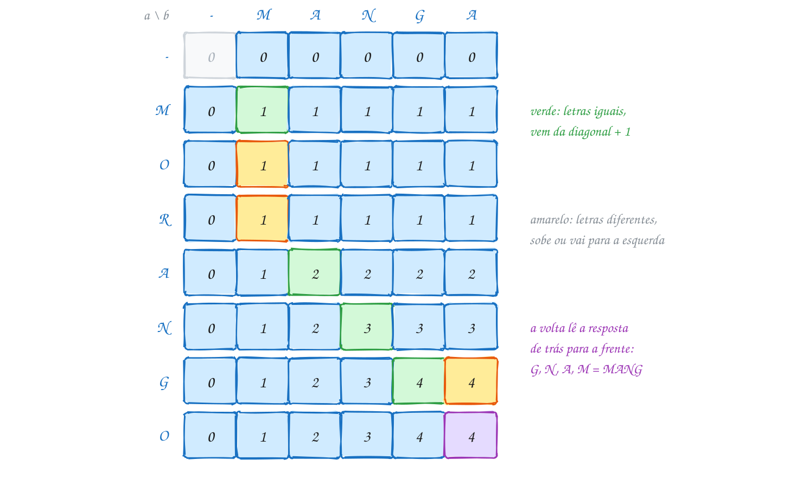
#include <stdio.h>
#include <string.h>
#define MAX 50
int main(void) {
const char *a = "MORANGO"; // o que foi ditado
const char *b = "MANGA"; // o que foi escrito
int m = strlen(a), n = strlen(b);
int c[MAX + 1][MAX + 1];
// c[i][j] = tamanho da maior subsequência comum de a[0..i-1] e b[0..j-1]
for (int i = 0; i <= m; i++) {
for (int j = 0; j <= n; j++) {
if (i == 0 || j == 0) {
c[i][j] = 0; // um dos dois é vazio
} else if (a[i - 1] == b[j - 1]) {
c[i][j] = c[i - 1][j - 1] + 1; // a letra entra nas duas
} else if (c[i - 1][j] >= c[i][j - 1]) {
c[i][j] = c[i - 1][j]; // descarta a letra de a
} else {
c[i][j] = c[i][j - 1]; // descarta a letra de b
}
}
}
printf(" -");
for (int j = 0; j < n; j++) {
printf(" %c", b[j]);
}
printf("\n");
for (int i = 0; i <= m; i++) {
printf("%c ", i == 0 ? '-' : a[i - 1]);
for (int j = 0; j <= n; j++) {
printf(" %d", c[i][j]);
}
printf("\n");
}
// recuperação: do canto até a borda, montando a resposta de trás para a frente
char lcs[MAX + 1];
int k = c[m][n];
lcs[k] = '\0';
int i = m, j = n;
while (i > 0 && j > 0) {
if (a[i - 1] == b[j - 1]) {
lcs[--k] = a[i - 1]; // letra comum: diagonal
i--;
j--;
} else if (c[i - 1][j] >= c[i][j - 1]) {
i--; // sobe
} else {
j--; // vai para a esquerda
}
}
printf("LCS de %s e %s: %s (%d letras)\n", a, b, lcs, c[m][n]);
return 0;
}
// Saída:
// - M A N G A
// - 0 0 0 0 0 0
// M 0 1 1 1 1 1
// O 0 1 1 1 1 1
// R 0 1 1 1 1 1
// A 0 1 2 2 2 2
// N 0 1 2 3 3 3
// G 0 1 2 3 4 4
// O 0 1 2 3 4 4
// LCS de MORANGO e MANGA: MANG (4 letras)
O caminho marcado no fluxograma é o de c[6][4] (G com G): as letras batem e
o valor vem da diagonal, 3 + 1:
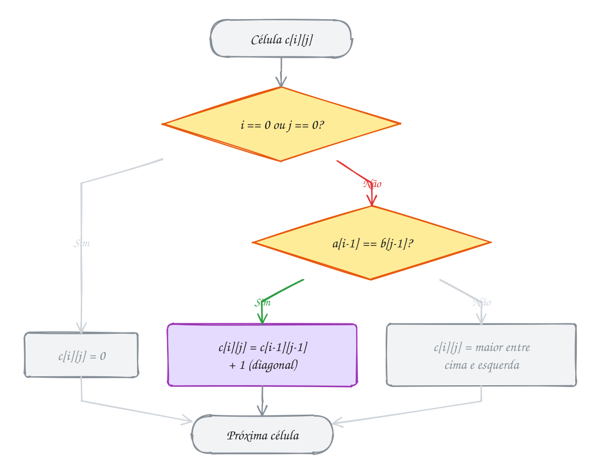
A volta, partindo de c[7][5], monta a resposta de trás para a frente:
| posição | letras | iguais? | c[i-1][j] / c[i][j-1] |
movimento | resposta até aqui |
|---|---|---|---|---|---|
| (7, 5) | O, A | não | 4 / 4 | sobe | |
| (6, 5) | G, A | não | 3 / 4 | esquerda | |
| (6, 4) | G, G | sim | diagonal | G | |
| (5, 3) | N, N | sim | diagonal | NG | |
| (4, 2) | A, A | sim | diagonal | ANG | |
| (3, 1) | R, M | não | 1 / 0 | sobe | ANG |
| (2, 1) | O, M | não | 1 / 0 | sobe | ANG |
| (1, 1) | M, M | sim | diagonal | MANG |
Exemplo A281 · DNA comparado com duas linhas de tabela
#include <stdio.h>
#include <string.h>
#define MAX 100
// Só o TAMANHO da LCS: cada linha da tabela só usa a de cima, então bastam
// duas linhas. Em vez de copiar a linha nova para a velha, os PONTEIROS
// trocam de papel a cada volta.
int lcs_tamanho(const char *a, const char *b) {
int m = strlen(a), n = strlen(b);
int linha1[MAX + 1], linha2[MAX + 1];
int *cima = linha1, *atual = linha2;
for (int j = 0; j <= n; j++) {
cima[j] = 0; // linha 0: prefixo vazio de a
}
for (int i = 1; i <= m; i++) {
atual[0] = 0; // coluna 0: prefixo vazio de b
for (int j = 1; j <= n; j++) {
if (a[i - 1] == b[j - 1]) {
atual[j] = cima[j - 1] + 1;
} else {
atual[j] = cima[j] > atual[j - 1] ? cima[j] : atual[j - 1];
}
}
int *t = cima; // a linha atual vira a "de cima"
cima = atual;
atual = t;
}
return cima[n]; // depois da troca, a última está em cima
}
int main(void) {
const char *amostra = "ATGCGTACGTTAGCCATGACGTAGCTAGGCTTACGATCGA";
const char *suspeito = "ATGCCTACGTAGCATGTCGTAGCAAGGCTACGTTCGA";
const char *outro = "TTAGGCATCCAGTTACGGATCATGCCAGTAATGCTGAA";
int m = strlen(amostra);
printf("amostra x suspeito: %d de %d bases em comum, na ordem\n",
lcs_tamanho(amostra, suspeito), m);
printf("amostra x outro: %d de %d bases em comum, na ordem\n",
lcs_tamanho(amostra, outro), m);
printf("memória: 2 linhas de %d int = %zu bytes (a tabela inteira teria %zu)\n",
MAX + 1, 2 * (MAX + 1) * sizeof(int), (size_t) (MAX + 1) * (MAX + 1) * sizeof(int));
return 0;
}
// Saída:
// amostra x suspeito: 33 de 40 bases em comum, na ordem
// amostra x outro: 25 de 40 bases em comum, na ordem
// memória: 2 linhas de 101 int = 808 bytes (a tabela inteira teria 40804)
gcc ~/LPEDC/material/A281.c -o ~/LPEDC/material/A281 && ~/LPEDC/material/A281
Exemplo A282 · Pedaço contíguo ou letras na ordem?
#include <stdio.h>
#include <string.h>
#define MAX 50
// maior SUBSTRING comum: o pedaço tem que ser contíguo nas duas.
// s[i][j] = tamanho do maior pedaço comum que TERMINA em a[i-1] e b[j-1].
// Letras diferentes quebram a sequência: s volta a 0.
int maior_substring(const char *a, const char *b, int *fim_em_a) {
int m = strlen(a), n = strlen(b), melhor = 0;
int s[MAX + 1][MAX + 1];
for (int i = 0; i <= m; i++) {
for (int j = 0; j <= n; j++) {
if (i == 0 || j == 0 || a[i - 1] != b[j - 1]) {
s[i][j] = 0;
} else {
s[i][j] = s[i - 1][j - 1] + 1;
if (s[i][j] > melhor) {
melhor = s[i][j];
*fim_em_a = i; // o pedaço é a[i - melhor .. i - 1]
}
}
}
}
return melhor;
}
// maior SUBSEQUÊNCIA comum: as letras só precisam estar na mesma ordem
int maior_subsequencia(const char *a, const char *b) {
int m = strlen(a), n = strlen(b);
int c[MAX + 1][MAX + 1];
for (int i = 0; i <= m; i++) {
for (int j = 0; j <= n; j++) {
if (i == 0 || j == 0) {
c[i][j] = 0;
} else if (a[i - 1] == b[j - 1]) {
c[i][j] = c[i - 1][j - 1] + 1;
} else {
c[i][j] = c[i - 1][j] > c[i][j - 1] ? c[i - 1][j] : c[i][j - 1];
}
}
}
return c[m][n];
}
int main(void) {
const char *pares[][2] = {
{"PARALELEPIPEDO", "PAPELARIA"},
{"FERROVIARIO", "FERRUGEM"},
{"ABCDEF", "FEDCBA"},
};
for (int p = 0; p < 3; p++) {
const char *a = pares[p][0], *b = pares[p][1];
int fim = 0;
int sub = maior_substring(a, b, &fim);
printf("%s x %s: substring %d (\"%.*s\"), subsequência %d\n",
a, b, sub, sub, a + fim - sub, maior_subsequencia(a, b));
}
return 0;
}
// Em ABCDEF x FEDCBA as letras são as mesmas, mas em ordem contrária:
// só uma delas fica "na ordem".
// Saída:
// PARALELEPIPEDO x PAPELARIA: substring 2 ("PA"), subsequência 5
// FERROVIARIO x FERRUGEM: substring 4 ("FERR"), subsequência 4
// ABCDEF x FEDCBA: substring 1 ("A"), subsequência 1
gcc ~/LPEDC/material/A282.c -o ~/LPEDC/material/A282 && ~/LPEDC/material/A282
Exercício E841 · ★☆☆
Duas linhas de ônibus atravessam o centro. Cada ponto tem uma letra:
linha 101: A B C D E F G H
linha 202: B D C E G A H
Quantos pontos as duas visitam na MESMA ordem (sem precisar ser pontos seguidos)? Escreva a função
int lcs(const char *a, const char *b)
que devolve o tamanho da maior subsequência comum, e teste com os pares abaixo, mostrando cada um entre aspas.
Saída esperada:
"ABCDEFGH" x "BDCEGAH": 5
"CASA" x "ASA": 3
"" x "ABC": 0
"XYZ" x "XYZ": 3
"ABC" x "DEF": 0
Exercício E843 · ★★☆
A LCS não é só para strings. Ana e Beto montaram playlists para a viagem, e cada música tem um número de catálogo:
Ana: 12 7 33 5 21 8 40 17
Beto: 7 5 9 21 40 3 17 12
Eles querem uma playlist em comum que respeite a ordem das DUAS listas. Escreva a função
int lcs_vetor(const int a[], int m, const int b[], int n, int saida[])
que grava em saida a maior subsequência comum dos dois vetores e devolve o tamanho dela. Mostre o resultado.
Saída esperada:
5 músicas em comum, na mesma ordem: 7 5 21 40 17
Exercício E844 · ★★☆
Charada de palavras: qual é a MENOR sequência de letras (não precisa existir no dicionário) que contém BANANA e também CABANA como subsequências? É a menor supersequência comum, e ela sai da tabela da LCS: as letras da LCS aparecem uma vez só, e todas as outras letras das duas palavras entram também. Por isso o tamanho é m + n - LCS.
Monte a tabela da LCS, construa a supersequência numa volta pela tabela e confira o resultado com uma função
int eh_subsequencia(const char *p, const char *t)
que diz se p é subsequência de t.
Saída esperada:
LCS: 4 letras
Supersequência: CABANANA (8 letras)
BANANA está nela? sim
CABANA está nela? sim
Exercício E846 · ★★★
O fechamento de uma ação em 13 pregões foi, em reais:
31 28 35 30 33 29 36 40 34 38 41 37 33
Qual é a maior sequência de pregões (não precisam ser seguidos) em que o preço SEMPRE sobe? Ela é a LCS entre o vetor original e uma cópia dele ORDENADA e SEM REPETIDOS.
Escreva o programa: copie o vetor, ordene a cópia com qsort, tire os repetidos, rode a LCS de vetores de int com recuperação e mostre o tamanho e os preços.
Saída esperada:
Maior sequência de altas: 6 dias
Preços: 28 30 33 36 40 41
Você digita "pesoa" e o corretor oferece "pessoa". Ele percebeu que falta
um s, e que "pesoa" está muito mais perto de "pessoa" do que de "pedra".
Para ordenar as sugestões, o corretor precisa de um número que diga o
quanto duas palavras são parecidas. A medida mais usada conta quantas
correções separam uma da outra.
A distância de edição, também chamada distância de Levenshtein, é o
menor número de operações que transforma uma string em outra. São três
operações, e cada uma custa 1: inserir uma letra, remover uma letra
e trocar uma letra por outra (LEVENSHTEIN, 1966). De "pesoa" para
"pessoa", basta inserir um s: distância 1. De CARTA para ARTES, a
distância é 3: remova o C (ARTA), insira um E (ARTEA) e troque o último A
por S (ARTES).
A PD segue o mesmo raciocínio da LCS (0141): olhe o fim das duas palavras. Se as últimas letras são iguais, elas não pedem correção, e a distância é a mesma das palavras sem elas. Se são diferentes, alguma operação tem de resolver essa última posição, e há três candidatas (KLEINBERG; TARDOS, 2006, cap. 6).
Cada candidata deixa um problema menor. Trocar a última letra de a
pela última de b custa 1, e sobra transformar as duas palavras sem a
última letra. Remover a última letra de a custa 1, e sobra transformar
a sem ela em b inteira. Inserir no fim de a a última letra de b
custa 1, e sobra transformar a inteira em b sem a última letra. A
distância é 1 mais a mais barata das três.
A tabela segue os prefixos, como na LCS. A célula d[i][j] é a distância
entre o prefixo a[0..i-1], com i letras, e o prefixo b[0..j-1], com
j letras. A resposta fica em d[m][n] (LINTZMAYER; MOTA, 2023). As três
operações viram três vizinhas: a diagonal d[i-1][j-1] é a troca, a de
cima d[i-1][j] é a remoção e a da esquerda d[i][j-1] é a inserção. A
tabela de consulta resume:
| caso | d[i][j] |
|---|---|
a[i-1] == b[j-1] |
d[i-1][j-1] (diagonal, de graça) |
| letras diferentes | 1 + o menor entre d[i-1][j-1] (troca), d[i-1][j] (remove) e d[i][j-1] (insere) |
A diferença para a LCS está na borda. Na LCS, a linha e a coluna 0
valiam zero. Aqui, transformar i letras numa palavra vazia pede i
remoções, então d[i][0] = i. E transformar a palavra vazia em j letras
pede j inserções, então d[0][j] = j (LINTZMAYER; MOTA, 2023).
O custo é o da tabela: (m + 1) × (n + 1) células de O(1), O(m × n).
Um corretor que compara a palavra digitada com 300 mil palavras do
dicionário não quer pagar isso para todas. Ele usa um limite inferior
barato: a distância é pelo menos a diferença dos tamanhos, porque cada
letra a mais pede uma remoção ou inserção. Palavras de tamanho muito
diferente saem antes de qualquer tabela (KLEINBERG; TARDOS, 2006, cap. 6).
A tabela dá o número; a volta dá as edições. Partindo de d[m][n], você
pergunta em cada célula de qual vizinha o valor veio: diagonal sem custo
quer dizer letras iguais; diagonal com custo é troca; de cima é remoção; da
esquerda é inserção. As operações saem do fim para o começo. Escritas em
ordem, elas formam um alinhamento das duas palavras, como o que se usa
para comparar trechos de DNA (KLEINBERG; TARDOS, 2006, cap. 6).
[!WARNING] A borda não é zero, como na LCS: sem
d[i][0] = ied[0][j] = j, CARTA e ARTES dariam 2. Na volta, confirai > 0ej > 0antes de lerd[i - 1][...]oua[i - 1].
Um corretor ranqueia sugestões pelo número de edições. CARTA e ARTES distam 3: remover o C, inserir um E e trocar o último A por S (CARTA, ARTA, ARTEA, ARTES). As setas mostram de onde cada célula veio:
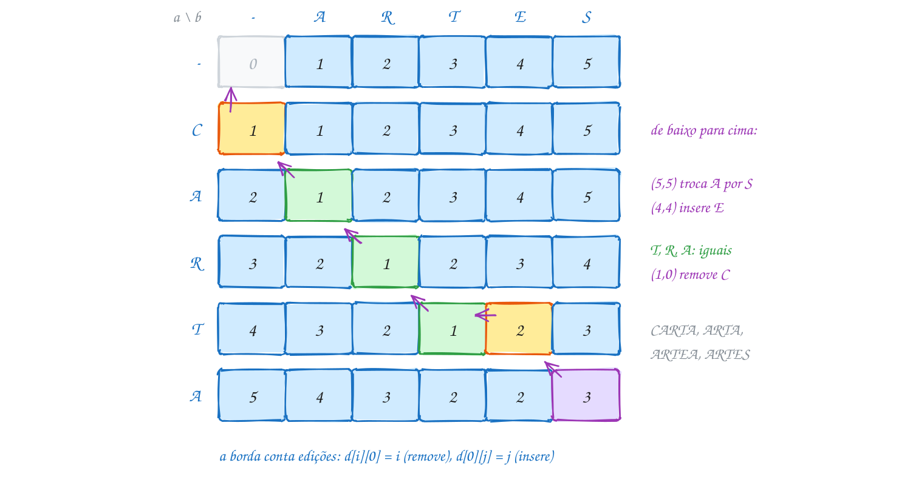
A volta mostra as edições do fim para o começo (o E852 monta o alinhamento na ordem certa):
#include <stdio.h>
#include <string.h>
#define MAX 50
int menor3(int x, int y, int z) {
int m = x < y ? x : y;
return m < z ? m : z;
}
int main(void) {
const char *a = "CARTA"; // de onde parte
const char *b = "ARTES"; // aonde quer chegar
int m = strlen(a), n = strlen(b);
int d[MAX + 1][MAX + 1];
// d[i][j] = menor número de edições que transforma a[0..i-1] em b[0..j-1]
for (int i = 0; i <= m; i++) {
d[i][0] = i; // apagar as i letras
}
for (int j = 0; j <= n; j++) {
d[0][j] = j; // inserir as j letras
}
for (int i = 1; i <= m; i++) {
for (int j = 1; j <= n; j++) {
if (a[i - 1] == b[j - 1]) {
d[i][j] = d[i - 1][j - 1]; // letra igual: de graça
} else {
d[i][j] = 1 + menor3(d[i - 1][j - 1], // troca a[i-1] por b[j-1]
d[i - 1][j], // remove a[i-1]
d[i][j - 1]); // insere b[j-1]
}
}
}
printf(" -");
for (int j = 0; j < n; j++) {
printf(" %c", b[j]);
}
printf("\n");
for (int i = 0; i <= m; i++) {
printf(" %c", i == 0 ? '-' : a[i - 1]);
for (int j = 0; j <= n; j++) {
printf(" %d", d[i][j]);
}
printf("\n");
}
printf("distância de %s para %s: %d\n", a, b, d[m][n]);
// volta: de onde veio cada célula? As edições saem do fim para o começo
int i = m, j = n;
while (i > 0 || j > 0) {
if (i > 0 && j > 0 && a[i - 1] == b[j - 1]) {
i--; // igual: não custa nada
j--;
} else if (i > 0 && j > 0 && d[i][j] == d[i - 1][j - 1] + 1) {
printf(" troca %c por %c\n", a[i - 1], b[j - 1]);
i--;
j--;
} else if (i > 0 && d[i][j] == d[i - 1][j] + 1) {
printf(" remove %c\n", a[i - 1]);
i--;
} else {
printf(" insere %c\n", b[j - 1]);
j--;
}
}
return 0;
}
// Saída:
// - A R T E S
// - 0 1 2 3 4 5
// C 1 1 2 3 4 5
// A 2 1 2 3 4 5
// R 3 2 1 2 3 4
// T 4 3 2 1 2 3
// A 5 4 3 2 2 3
// distância de CARTA para ARTES: 3
// troca A por S
// insere E
// remove C
No fluxograma, o caminho marcado é o de d[5][5] (A contra S), em que a troca
ganhou:
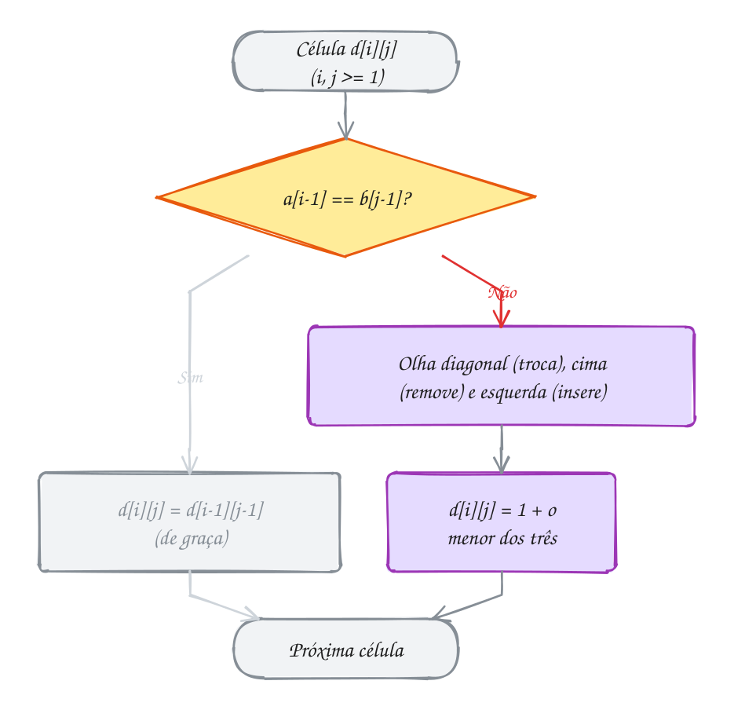
A volta, partindo de d[5][5] = 3. Em cada célula: "de qual vizinho eu vim?"
| posição | letras | candidatos: troca / remove / insere | veio de | operação |
|---|---|---|---|---|
| (5, 5) | A, S | 2 + 1 / 3 + 1 / 2 + 1 | diagonal (troca, testada primeiro) | troca A por S |
| (4, 4) | T, E | 2 + 1 / 3 + 1 / 1 + 1 | esquerda | insere E |
| (4, 3) | T, T | iguais | diagonal | nenhuma |
| (3, 2) | R, R | iguais | diagonal | nenhuma |
| (2, 1) | A, A | iguais | diagonal | nenhuma |
| (1, 0) | C, - | borda | cima | remove C |
Exemplo A283 · O corretor que sugere a palavra mais perto
#include <stdio.h>
#include <string.h>
#define MAX 30
int menor3(int x, int y, int z) {
int m = x < y ? x : y;
return m < z ? m : z;
}
int distancia(const char *a, const char *b) {
int m = strlen(a), n = strlen(b);
int d[MAX + 1][MAX + 1];
for (int i = 0; i <= m; i++) {
d[i][0] = i;
}
for (int j = 0; j <= n; j++) {
d[0][j] = j;
}
for (int i = 1; i <= m; i++) {
for (int j = 1; j <= n; j++) {
if (a[i - 1] == b[j - 1]) {
d[i][j] = d[i - 1][j - 1];
} else {
d[i][j] = 1 + menor3(d[i - 1][j - 1], d[i - 1][j], d[i][j - 1]);
}
}
}
return d[m][n];
}
int main(void) {
// palavras sem acento: em UTF-8, "ç" e "ã" ocupam 2 bytes cada, e a
// distância contaria bytes, não letras
const char *dicionario[] = {"pessoa", "pesca", "peso", "lagoa", "pose",
"pessoal", "mesa", "proa", "passeio"};
int n = 9;
const char *digitadas[] = {"pesoa", "lagao", "pasoe"};
for (int k = 0; k < 3; k++) {
int melhor = MAX + 1;
for (int p = 0; p < n; p++) {
int dist = distancia(digitadas[k], dicionario[p]);
if (dist < melhor) {
melhor = dist;
}
}
printf("%s -> distância %d:", digitadas[k], melhor);
for (int p = 0; p < n; p++) { // todas as que empatam no mínimo
if (distancia(digitadas[k], dicionario[p]) == melhor) {
printf(" %s", dicionario[p]);
}
}
printf("\n");
}
return 0;
}
// Empates são comuns: corretores de verdade desempatam pela frequência de
// uso de cada palavra. E "lagao" trocou duas letras vizinhas de lugar, mas
// a distância conta 2: o A284 mostra como contar isso como 1.
// Saída:
// pesoa -> distância 1: pessoa pesca peso
// lagao -> distância 2: lagoa
// pasoe -> distância 2: peso pose
gcc ~/LPEDC/material/A283.c -o ~/LPEDC/material/A283 && ~/LPEDC/material/A283
Exemplo A284 · Letras trocadas de lugar contam como um erro só
#include <stdio.h>
#include <string.h>
#define MAX 30
int menor(int x, int y) {
return x < y ? x : y;
}
// Levenshtein com uma quarta operação: TRANSPOR duas letras vizinhas
// ("ac" <-> "ca"), também com custo 1. É o erro de digitação mais comum.
// Com transpoe == 0, é a distância de edição comum.
int distancia(const char *a, const char *b, int transpoe) {
int m = strlen(a), n = strlen(b);
int d[MAX + 1][MAX + 1];
for (int i = 0; i <= m; i++) {
d[i][0] = i;
}
for (int j = 0; j <= n; j++) {
d[0][j] = j;
}
for (int i = 1; i <= m; i++) {
for (int j = 1; j <= n; j++) {
int custo = (a[i - 1] == b[j - 1]) ? 0 : 1;
d[i][j] = menor(menor(d[i - 1][j] + 1, // remove
d[i][j - 1] + 1), // insere
d[i - 1][j - 1] + custo); // troca (ou igual)
// as duas últimas de a são as duas últimas de b, invertidas?
if (transpoe && i > 1 && j > 1 &&
a[i - 1] == b[j - 2] && a[i - 2] == b[j - 1]) {
d[i][j] = menor(d[i][j], d[i - 2][j - 2] + 1);
}
}
}
return d[m][n];
}
int main(void) {
const char *pares[][2] = {
{"cmaa", "cama"},
{"lagao", "lagoa"},
{"teclaod", "teclado"},
{"qeuijo", "queijo"},
{"abcd", "badc"},
};
printf("%-8s %-8s comum com transposição\n", "digitou", "queria");
for (int p = 0; p < 5; p++) {
printf("%-8s %-8s %5d %16d\n", pares[p][0], pares[p][1],
distancia(pares[p][0], pares[p][1], 0),
distancia(pares[p][0], pares[p][1], 1));
}
return 0;
}
// Saída:
// digitou queria comum com transposição
// cmaa cama 2 1
// lagao lagoa 2 1
// teclaod teclado 2 1
// qeuijo queijo 2 1
// abcd badc 3 2
gcc ~/LPEDC/material/A284.c -o ~/LPEDC/material/A284 && ~/LPEDC/material/A284
Exercício E847 · ★☆☆
Escreva a função
int distancia(const char *a, const char *b)
que devolve a distância de Levenshtein entre duas palavras (inserir, remover e trocar custam 1), e teste com os pares abaixo, mostrando cada um entre aspas.
Saída esperada:
"LIVRO" -> "LIBRA": 2
"" -> "SOL": 3
"CASA" -> "CASA": 0
"ABACAXI" -> "ABACATE": 2
"FUTEBOL" -> "BASQUETE": 8
Exercício E849 · ★★☆
Alguns sistemas de controle de versão não "trocam" letras: cada mudança é uma remoção seguida de uma inserção. Nessa distância sem troca, BOLO para BOLA custa 2 (remove O, insere A), e não 1.
Escreva int dist_sem_troca(const char *a, const char *b), com a mesma tabela da distância de edição mas só com remover e inserir. Escreva também int lcs(const char *a, const char *b) e confira, para cada par, que a distância sem troca é igual a m + n - 2 x LCS (tudo que não está na LCS sai de a ou entra de b).
Saída esperada:
PALMEIRAS PALMAS PD: 3 m + n - 2 x LCS = 9 + 6 - 2 x 6 = 3
CARTA ARTES PD: 4 m + n - 2 x LCS = 5 + 5 - 2 x 3 = 4
BOLO BOLA PD: 2 m + n - 2 x LCS = 4 + 4 - 2 x 3 = 2
RECIFE FORTALEZA PD: 11 m + n - 2 x LCS = 6 + 9 - 2 x 2 = 11
Exercício E850 · ★★☆
A câmera do estacionamento lê placas com erro: troca O por 0, perde um caractere no fim, inventa outro. As placas cadastradas são:
BRA2E19 RIO1A23 SPX9F87 BRA2E79 MGA4B56 BRZ2E19 PE1234 AM12B3456
Para cada leitura (BRA2E19, RI01A23, SPX9F8 e XYZ0000), mostre todas as placas cadastradas a distância de edição de no máximo 1, com a distância entre parênteses, ou "nenhuma". Antes de montar cada tabela, pule as placas cujo tamanho difere da leitura em mais de 1 (a distância é pelo menos a diferença dos tamanhos), e conte quantas tabelas foram montadas.
Saída esperada:
BRA2E19: BRA2E19 (0) BRA2E79 (1) BRZ2E19 (1)
RI01A23: RIO1A23 (1)
SPX9F8: SPX9F87 (1)
XYZ0000: nenhuma
tabelas montadas: 28 de 32
Exercício E852 · ★★★
Programas de comparar textos e de bioinformática mostram o ALINHAMENTO das duas sequências, uma em cima da outra, com um traço onde falta letra e uma marca embaixo dizendo o que aconteceu em cada coluna:
= letras iguais T troca R remove (de cima) I insere (de baixo)
Escreva void alinha(const char *a, const char *b), que monta a tabela da distância de edição, faz a volta e mostra a distância e as três linhas do alinhamento, com um espaço antes de cada caractere. Teste com SABADO -> SALDO e ESTRELA -> ESTERIL.
Saída esperada:
SABADO -> SALDO: distância 2
S A B A D O
S A - L D O
= = R T = =
ESTRELA -> ESTERIL: distância 3
E S T - R E L A
E S T E R I L -
= = = I = T = R
Você e a sua mãe dividem a lista de compras num arquivo de texto, uma coisa
por linha. Ela abriu, mexeu e salvou. O que mudou? O programa que responde
isso é o diff: ele recebe duas versões de um arquivo e mostra o que entrou
e o que saiu (LINUX MAN-PAGES, s.d.). Este projeto monta uma versão pequena
dele.
A primeira ideia, comparar a linha 1 com a linha 1, a 2 com a 2, e assim por diante, não serve. Se ela acrescentou "açúcar" no começo, todas as linhas descem uma posição, e todas parecem diferentes, embora quase nada tenha mudado (LINUX MAN-PAGES, s.d.). O que você quer é achar o maior pedaço que ficou igual, na mesma ordem, mesmo com linhas novas no meio.
Isso é a LCS do assunto 0141, com linhas no lugar de letras. Duas linhas
casam quando strcmp devolve 0. As linhas que entram na LCS ficaram iguais
nas duas versões. As que só estão na versão antiga foram removidas e
saem com -. As que só estão na nova foram adicionadas e saem com +
(CORMEN et al., 2024, cap. 14). Uma linha alterada, como "leite" que virou
"leite sem lactose", aparece como uma remoção e uma adição.
Há um ajuste na tabela. Na LCS do 0141, c[i][j] falava dos prefixos e a
volta andava do fim para o começo, então as letras saíam ao contrário. Para
o diff, a saída tem de vir na ordem do arquivo. A solução é trabalhar com
sufixos, os finais das listas: c[i][j] é a LCS de a[i..m-1] e
b[j..n-1]. A tabela se enche de trás para a frente, a resposta fica em
c[0][0] e a volta anda do começo para o fim, imprimindo na ordem
certa (LINTZMAYER; MOTA, 2023).
Na volta, em cada posição (i, j), se as linhas são iguais, a linha sai
com dois espaços na frente e as duas listas avançam. Se não são, olhe os
vizinhos c[i+1][j] e c[i][j+1]: o maior diz qual lado avançar. Avançar
em a quer dizer que a linha a[i] não está na nova versão, e ela sai com
-; avançar em b quer dizer que b[j] é nova, e ela sai com +.
Para ler as linhas, o programa usa fgets, que traz a linha inteira para
um buffer, inclusive o '\n' do fim. Esse '\n' atrapalha a comparação e
precisa sair. A linha buf[strcspn(buf, "\n")] = '\0' resolve: strcspn
devolve a posição do primeiro '\n', ou o tamanho da string se não houver
nenhum, e ali entra o terminador (CPPREFERENCE, s.d.).
A tabela pode ser grande. Dois arquivos de 2000 linhas pedem 4 milhões de
células, 16 MB de int, o dobro da pilha padrão do Linux. Por isso ela não
é uma matriz local: vem de um único malloc de (m + 1) × (n + 1) inteiros,
e a célula (i, j) mora na posição i * w + j desse bloco, com w = n + 1,
a largura de uma linha (KERNIGHAN; RITCHIE, 1989).
Mesmo assim, O(m × n) não escala. Com 100 mil linhas de cada lado, seriam
40 GB de tabela. O diff de verdade usa o algoritmo de Myers, que gasta
O((m + n) × D), com D o número de diferenças (MYERS, 1986). Como dois
arquivos parecidos têm poucas diferenças, ele roda rápido justamente no caso
mais comum.
[!WARNING] Sem tirar o
'\n', "banana\n" e "banana" diferem nostrcmpe o diff acusa uma mudança invisível. A última linha do arquivo pode vir sem'\n'.
Você e sua mãe dividem a lista de compras num arquivo. linhas.h e
linhas.c (assunto 0034) leem as linhas num char ** que dobra com
realloc (assunto 0055). No desenho, a lista antiga fica à esquerda, a nova à
direita, e os traços ligam as cinco linhas da LCS:
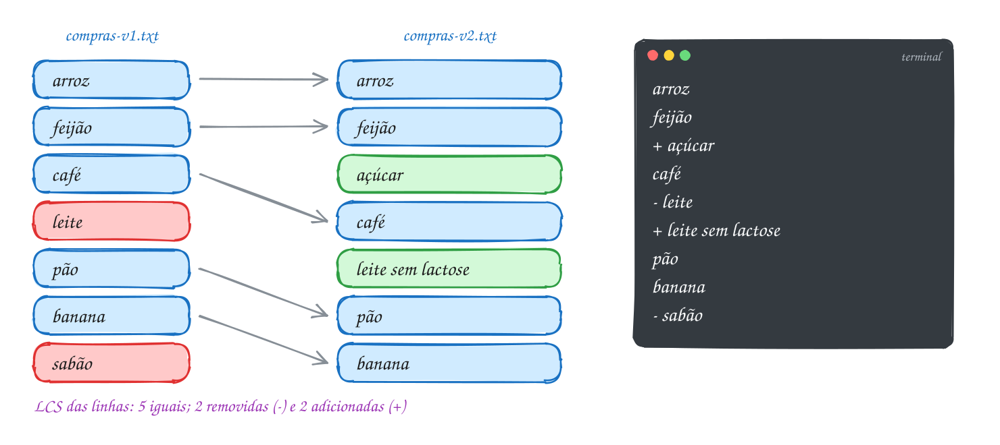
Sem argumentos, o programa compara duas listas gravadas em /tmp; com dois
nomes de arquivo (assunto 0069), compara os seus:
#include <stdio.h>
#include <stdlib.h>
#include <string.h>
#include "linhas.h"
// diff linha a linha: LCS dos SUFIXOS, para a volta andar do começo ao fim
void diff(char **a, int m, char **b, int n) {
// c[i * w + j] = LCS de a[i..m-1] e b[j..n-1]: a matriz (m+1) x (n+1)
// num bloco só do malloc, linha após linha
int w = n + 1;
int *c = malloc((size_t) (m + 1) * w * sizeof *c);
if (c == NULL) {
return;
}
for (int i = m; i >= 0; i--) {
for (int j = n; j >= 0; j--) {
if (i == m || j == n) {
c[i * w + j] = 0; // um sufixo vazio
} else if (strcmp(a[i], b[j]) == 0) {
c[i * w + j] = c[(i + 1) * w + j + 1] + 1;
} else {
int baixo = c[(i + 1) * w + j], dir = c[i * w + j + 1];
c[i * w + j] = baixo >= dir ? baixo : dir;
}
}
}
int i = 0, j = 0, iguais = 0, menos = 0, mais = 0;
while (i < m || j < n) {
if (i < m && j < n && strcmp(a[i], b[j]) == 0) {
printf(" %s\n", a[i]); // está nas duas versões
i++;
j++;
iguais++;
} else if (j == n || (i < m && c[(i + 1) * w + j] >= c[i * w + j + 1])) {
printf("- %s\n", a[i]); // só na versão antiga
i++;
menos++;
} else {
printf("+ %s\n", b[j]); // só na versão nova
j++;
mais++;
}
}
printf("(%d iguais, %d removidas, %d adicionadas)\n", iguais, menos, mais);
free(c);
}
int main(int argc, char *argv[]) {
const char *antigo = "/tmp/compras-v1.txt";
const char *novo = "/tmp/compras-v2.txt";
if (argc == 3) { // ./programa a.txt b.txt
antigo = argv[1];
novo = argv[2];
} else { // sem argumentos: o exemplo
const char *v1[] = {"arroz", "feijão", "café", "leite", "pão", "banana",
"sabão"};
const char *v2[] = {"arroz", "feijão", "açúcar", "café", "leite sem lactose",
"pão", "banana"};
grava_linhas(antigo, v1, 7);
grava_linhas(novo, v2, 7);
}
int m = 0, n = 0;
char **a = le_linhas(antigo, &m);
char **b = le_linhas(novo, &n);
if (a != NULL && b != NULL) {
diff(a, m, b, n);
}
libera_linhas(a, m);
libera_linhas(b, n);
return 0;
}
// Saída:
// arroz
// feijão
// + açúcar
// café
// - leite
// + leite sem lactose
// pão
// banana
// - sabão
// (5 iguais, 2 removidas, 2 adicionadas)
"leite" e "leite sem lactose" viram uma remoção e uma adição; o A286 usa a distância de edição (0142) para ver que a linha só foi alterada. O caminho marcado é o das duas primeiras linhas, iguais:
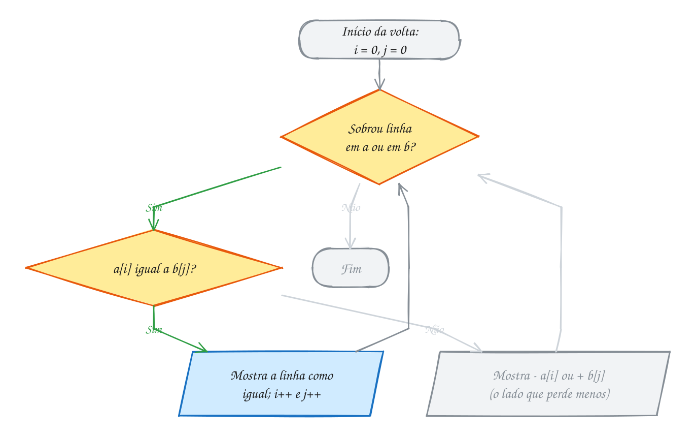
Exemplo A285 · Diff palavra por palavra
#include <stdio.h>
#include <string.h>
#define MAXP 30 // palavras por frase
#define TAM 20 // letras por palavra
// quebra a frase em palavras (separadas por espaço); devolve quantas
int separa(const char *frase, char palavras[][TAM]) {
int n = 0, k = 0;
for (const char *p = frase;; p++) {
if (*p == ' ' || *p == '\0') {
if (k > 0 && n < MAXP) {
palavras[n][k] = '\0';
n++;
}
k = 0;
if (*p == '\0') {
break;
}
} else if (k < TAM - 1) {
palavras[n][k++] = *p;
}
}
return n;
}
// o mesmo diff do texto, com palavras no lugar de linhas: [-saiu-] {+entrou+}
void diff_palavras(const char *antes, const char *depois) {
char a[MAXP][TAM], b[MAXP][TAM];
int m = separa(antes, a), n = separa(depois, b);
int c[MAXP + 1][MAXP + 1]; // LCS dos sufixos
for (int i = m; i >= 0; i--) {
for (int j = n; j >= 0; j--) {
if (i == m || j == n) {
c[i][j] = 0;
} else if (strcmp(a[i], b[j]) == 0) {
c[i][j] = c[i + 1][j + 1] + 1;
} else {
c[i][j] = c[i + 1][j] >= c[i][j + 1] ? c[i + 1][j] : c[i][j + 1];
}
}
}
int i = 0, j = 0;
while (i < m || j < n) {
if (i > 0 || j > 0) {
printf(" "); // espaço entre palavras, não no fim
}
if (i < m && j < n && strcmp(a[i], b[j]) == 0) {
printf("%s", a[i]);
i++;
j++;
} else if (j == n || (i < m && c[i + 1][j] >= c[i][j + 1])) {
printf("[-%s-]", a[i++]);
} else {
printf("{+%s+}", b[j++]);
}
}
printf("\n");
}
int main(void) {
diff_palavras("o ônibus 175 sai do terminal às 8h e passa pelo centro",
"o ônibus 175 parte do terminal às 7h30 e passa pelo centro e pela orla");
diff_palavras("reunião de condomínio na quinta no salão",
"reunião de condomínio adiada para sexta no salão de festas");
return 0;
}
// Saída:
// o ônibus 175 [-sai-] {+parte+} do terminal às [-8h-] {+7h30+} e passa pelo centro {+e+} {+pela+} {+orla+}
// reunião de condomínio [-na-] [-quinta-] {+adiada+} {+para+} {+sexta+} no salão {+de+} {+festas+}
gcc ~/LPEDC/material/A285.c ~/LPEDC/material/0143-linhas.c -o ~/LPEDC/material/A285 && ~/LPEDC/material/A285
Exemplo A286 · O diff que percebe uma linha só alterada
#include <stdio.h>
#include <stdlib.h>
#include <string.h>
#include "0143-linhas.h"
#define MAXL 100 // linhas por arquivo, neste exemplo
#define TAM 256
int menor3(int x, int y, int z) {
int m = x < y ? x : y;
return m < z ? m : z;
}
// distância de edição (assunto 0142) com duas linhas de tabela
int distancia(const char *a, const char *b) {
int m = strlen(a), n = strlen(b);
int ant[TAM + 1], at[TAM + 1];
for (int j = 0; j <= n; j++) {
ant[j] = j;
}
for (int i = 1; i <= m; i++) {
at[0] = i;
for (int j = 1; j <= n; j++) {
if (a[i - 1] == b[j - 1]) {
at[j] = ant[j - 1];
} else {
at[j] = 1 + menor3(ant[j - 1], ant[j], at[j - 1]);
}
}
memcpy(ant, at, (n + 1) * sizeof ant[0]);
}
return ant[n];
}
// "parecidas": a distância é no máximo um terço da linha mais comprida
int parecidas(const char *a, const char *b) {
int maior = strlen(a) > strlen(b) ? strlen(a) : strlen(b);
return 3 * distancia(a, b) <= maior;
}
int main(void) {
const char *v1[] = {"segunda: feijoada", "terça: frango assado", "quarta: lasanha",
"quinta: peixe frito", "sexta: pizza"};
const char *v2[] = {"segunda: feijoada", "terça: frango grelhado", "quarta: lasanha",
"quinta: strogonoff", "sexta: pizza", "sábado: churrasco"};
grava_linhas("/tmp/cardapio-v1.txt", v1, 5);
grava_linhas("/tmp/cardapio-v2.txt", v2, 6);
int m = 0, n = 0;
char **a = le_linhas("/tmp/cardapio-v1.txt", &m);
char **b = le_linhas("/tmp/cardapio-v2.txt", &n);
if (a == NULL || b == NULL || m > MAXL || n > MAXL) {
libera_linhas(a, m);
libera_linhas(b, n);
return 1;
}
static int c[MAXL + 1][MAXL + 1]; // LCS dos sufixos, como no texto
for (int i = m; i >= 0; i--) {
for (int j = n; j >= 0; j--) {
if (i == m || j == n) {
c[i][j] = 0;
} else if (strcmp(a[i], b[j]) == 0) {
c[i][j] = c[i + 1][j + 1] + 1;
} else {
c[i][j] = c[i + 1][j] >= c[i][j + 1] ? c[i + 1][j] : c[i][j + 1];
}
}
}
int i = 0, j = 0;
while (i < m || j < n) {
if (i < m && j < n && strcmp(a[i], b[j]) == 0) {
printf(" %s\n", a[i]);
i++;
j++;
} else if (i < m && j < n && c[i + 1][j + 1] == c[i][j] && parecidas(a[i], b[j])) {
// pular as duas não perde nada da LCS, e elas são parecidas:
// em vez de "- a[i]" e "+ b[j]", é uma linha alterada
printf("~ %s -> %s\n", a[i], b[j]);
i++;
j++;
} else if (j == n || (i < m && c[i + 1][j] >= c[i][j + 1])) {
printf("- %s\n", a[i++]);
} else {
printf("+ %s\n", b[j++]);
}
}
libera_linhas(a, m);
libera_linhas(b, n);
return 0;
}
// Na saída, "peixe frito" e "strogonoff" são diferentes demais: viram - e +.
// Saída:
// segunda: feijoada
// ~ terça: frango assado -> terça: frango grelhado
// quarta: lasanha
// - quinta: peixe frito
// + quinta: strogonoff
// sexta: pizza
// + sábado: churrasco
gcc ~/LPEDC/material/A286.c ~/LPEDC/material/0143-linhas.c -o ~/LPEDC/material/A286 && ~/LPEDC/material/A286
Exercício E853 · ★☆☆
A fila de espera do posto de saúde é um arquivo com um nome por linha. Ontem e hoje ela estava assim:
ontem: Ana Bruno Carla Davi Elisa Fábio Gabi Hugo
hoje: Ana Carla Davi Igor Elisa Gabi Hugo Júlia Kátia
Sem imprimir o diff, mostre só o resumo, como o "diff --stat": quantas linhas ficaram iguais, quantas saíram e quantas entraram, e a semelhança entre as duas versões, 2 x LCS / (m + n), em porcentagem. Guarde as listas em vetores de strings no próprio programa (const char *ontem[]) e escreva int lcs_linhas(const char *a[], int m, const char *b[], int n).
Saída esperada:
6 iguais, 2 removidas, 3 adicionadas
semelhança: 70.6%
gcc ~/LPEDC/material/E853.c ~/LPEDC/material/0143-linhas.c -o ~/LPEDC/material/E853 && ~/LPEDC/material/E853
Exercício E855 · ★★☆
Duas versões de um programa em C estão em vetores de strings, uma linha por posição:
antiga: "#include <stdio.h>", "// versão 1", "int main(void) {",
" printf(\"oi\\n\");", " return 0;", "}"
nova: "#include <stdio.h>", "// versão 2", "int main(void) {",
" int x = 2;", " printf(\"%d\\n\", x);", " return 0;", "}"
Escreva o mini-diff: monte a tabela da LCS dos sufixos e percorra-a do começo ao fim. Antes de cada linha, mostre o número dela na versão antiga e na nova (igual: os dois; removida: só o antigo; adicionada: só o novo), com estes formatos de printf:
igual: "%3d %3d %s\n"
removida: "%3d - %s\n"
adicionada: " %3d + %s\n"
Saída esperada:
1 1 #include <stdio.h>
2 - // versão 1
2 + // versão 2
3 3 int main(void) {
4 - printf("oi\n");
4 + int x = 2;
5 + printf("%d\n", x);
5 6 return 0;
6 7 }
(4 iguais, 2 removidas, 3 adicionadas)
gcc ~/LPEDC/material/E855.c ~/LPEDC/material/0143-linhas.c -o ~/LPEDC/material/E855 && ~/LPEDC/material/E855
Exercício E856 · ★★☆
A saída do diff é um PATCH: a receita para transformar a versão antiga na nova. Este é o patch da lista de compras do texto:
" arroz", " feijão", "+ açúcar", " café", "- leite",
"+ leite sem lactose", " pão", " banana", "- sabão"
Escreva
int aplica(const char *orig[], int m, const char *patch[], int p,
const char *novo[])
que aplica o patch ao original e grava as linhas da versão nova em novo, devolvendo quantas são. Linhas " " e "- " falam de uma linha do original e precisam BATER com ela; se não baterem, o patch não se aplica: devolva -(número da linha do original, contando de 1). Teste com a lista antiga e com uma lista em que a 3ª linha virou "chá".
Saída esperada:
v1: arroz, feijão, açúcar, café, leite sem lactose, pão, banana
outra lista: o patch não se aplica (linha 3)
gcc ~/LPEDC/material/E856.c ~/LPEDC/material/0143-linhas.c -o ~/LPEDC/material/E856 && ~/LPEDC/material/E856
Exercício E858 · ★★★
Quando dois arquivos têm centenas de linhas e só duas mudaram, o diff completo é inútil. O "diff -u" mostra só as linhas mudadas e algumas iguais em volta, o CONTEXTO, e troca cada trecho pulado por "...".
As duas versões de uma receita de bolo estão nos vetores a[] (12 passos) e b[] (13 passos), declarados abaixo. Escreva o diff com 1 linha de contexto (#define CONTEXTO 1): uma linha igual só aparece se estiver a no máximo 1 posição de uma mudança na sequência de operações. Cada trecho escondido (inclusive no começo e no fim) vira uma linha "...". Mudanças saem como "- texto" e "+ texto"; contexto, como " texto".
Saída esperada:
...
2. Unte a forma com manteiga.
- 3. Bata 3 ovos com 2 xícaras de açúcar.
+ 3. Bata 3 ovos com 1 xícara de açúcar.
4. Junte 1 xícara de leite.
...
11. Desenforme.
- 12. Sirva.
+ 12. Cubra com calda de chocolate.
+ 13. Sirva.
gcc ~/LPEDC/material/E858.c ~/LPEDC/material/0143-linhas.c -o ~/LPEDC/material/E858 && ~/LPEDC/material/E858
30 exercícios que misturam os assuntos do módulo, no ritmo da prova. Arquivos P2101.c a P2130.c, em material/; resoluções em _respostas/21-programacao-dinamica/lista/.
Exercício P2101 · ★☆☆ · Tribonacci com e sem memória
A sequência de Tribonacci soma os TRÊS anteriores: T(0) = 0, T(1) = 0, T(2) = 1 e T(n) = T(n - 1) + T(n - 2) + T(n - 3). O programa abaixo tem a versão recursiva ingênua, que conta as chamadas. Estenda-o com a versão memoizada: um vetor memo[] com -1 em "ainda não calculado", e a função só calcula quando não sabe a resposta. Mostre T(25) e as chamadas das duas versões.
Saída esperada:
Ingênua: T(25) = 755476, 2700421 chamadas
Memoizada: T(25) = 755476, 70 chamadas
Resposta esperada: T(25) = 755476; a ingênua faz 2700421 chamadas e a memoizada, só 70 (cada n de 3 a 25 calcula uma vez e chama 3).
Exercício P2102 · ★☆☆ · A escada com degraus quebrados
A escada do mirante tem 12 degraus, e você sobe de 1 ou de 2 degraus por vez. Os degraus 4 e 7 estão quebrados: não dá para pisar neles. De quantos jeitos dá para chegar ao degrau 12, saindo do chão (degrau 0)? Escreva do zero a tabela de baixo para cima: formas[0] = 1 e, para cada degrau i, formas[i] = formas[i - 1] + formas[i - 2], menos nos quebrados, que ficam com 0. Mostre a tabela e a resposta.
Saída esperada:
degrau 0: 1
degrau 1: 1
degrau 2: 2
degrau 3: 3
degrau 4: 0
degrau 5: 3
degrau 6: 3
degrau 7: 0
degrau 8: 3
degrau 9: 3
degrau 10: 6
degrau 11: 9
degrau 12: 15
Jeitos de chegar ao topo: 15
Resposta esperada: 15 jeitos. Sem degraus quebrados seriam 233.
Exercício P2103 · ★☆☆ · O carteiro e as ruas em obra
O carteiro sai da agência no canto de cima à esquerda de um bairro em grade 5 × 6 e vai até a última casa, no canto de baixo à direita, andando só para a direita ou para baixo. As esquinas com X estão em obra e não dá para passar. Quantos caminhos ele tem? Complete o laço que preenche a tabela: cam[l][c] = cam[l - 1][c] + cam[l][c - 1], com 0 nas esquinas em obra. O programa mostra a tabela inteira.
. . . . . .
. X . . X .
. . . X . .
X . . . . .
. . X . . .
Saída esperada:
1 1 1 1 1 1
1 0 1 2 0 1
1 1 2 0 0 1
0 1 3 3 3 4
0 1 0 3 6 10
Caminhos: 10
Resposta esperada: 10 caminhos. A esquina (3, 0) em obra zera toda a coluna 0 abaixo dela.
Exercício P2104 · ★☆☆ · As fichas do fliperama
O fliperama vende fichas em pacotes de 1, 5, 6 e 9 fichas, e você quer exatamente 11 fichas com o menor número de pacotes. O guloso pega 9 + 1
Saída esperada:
Mínimo para 11 fichas: 2 pacotes
Compra: 5 6
Resposta esperada: 2 pacotes, 6 + 5 (ou 5 + 6: a ordem depende de como você testa).
Exercício P2105 · ★☆☆ · As fatias do bolo de rolo
A doceira vende bolo de rolo em fatias, e o preço depende do comprimento da fatia (o preço por cm muda de um tamanho para outro):
cm 1 2 3 4 5 6
R$ 3 7 11 13 16 20
Um rolo de 10 cm pode ser cortado como ela quiser (ou não cortado, se coubesse na tabela). Quanto ela ganha, no máximo? Este é o CORTE DE HASTE do Cormen (15.1). Complete o laço de baixo para cima: melhor[j] é o maior valor de um pedaço de j cm, testando a primeira fatia de cada tamanho i e somando melhor[j - i].
Saída esperada:
1 cm: R$ 3
2 cm: R$ 7
3 cm: R$ 11
4 cm: R$ 14
5 cm: R$ 18
6 cm: R$ 22
7 cm: R$ 25
8 cm: R$ 29
9 cm: R$ 33
10 cm: R$ 36
Fatias: 1 3 3 3
Resposta esperada: R$ 36, com fatias de 1, 3, 3 e 3 cm. A fatia de 3 cm é a que rende mais por cm (R$ 3,67), mas 10 não é múltiplo de 3.
Exercício P2106 · ★☆☆ · A maior fila em ordem de altura
Na foto da turma, 10 crianças estão na ordem da chamada, com estas alturas em cm:
121 135 118 140 127 132 145 124 150 138
Sem trocar ninguém de lugar, a professora quer tirar crianças da foto para que as que ficam estejam em altura crescente, deixando o MAIOR número possível. Isso é a SUBSEQUÊNCIA CRESCENTE MÁXIMA. Escreva do zero a PD O(n²): lis[i] é o tamanho da maior subsequência crescente que TERMINA na criança i; lis[i] = 1 + o maior lis[j] com j < i e altura[j] < altura[i]. Mostre lis[] e a resposta.
Saída esperada:
lis: 1 2 1 3 2 3 4 2 5 4
Maior fila crescente: 5 crianças
Resposta esperada: 5 crianças, por exemplo 121 135 140 145 150 ou 121 127 132 145 150.
Exercício P2107 · ★☆☆ · Plantões sem dois seguidos
Uma enfermeira pode pegar plantões extras nos próximos 9 dias, mas a regra do hospital proíbe dois plantões em dias seguidos. Cada dia paga um valor diferente (fim de semana e feriado pagam mais):
dia: 1 2 3 4 5 6 7 8 9
R$: 180 250 160 300 120 220 400 150 210
Quanto ela ganha, no máximo? Escreva do zero a PD: ganho[i] é o melhor valor usando os dias 1 a i. No dia i, ou ela não trabalha (fica ganho[i - 1]) ou trabalha (valor[i] + ganho[i - 2]). Depois, reconstrua os dias escolhidos andando de trás para a frente.
Saída esperada:
Ganho máximo: R$ 1160
Dias: 2 4 7 9
Resposta esperada: R$ 1160, nos dias 2, 4, 7 e 9.
Exercício P2108 · ★☆☆ · A tabela da LCS na tela
Para entender a LCS de verdade, vale ver a tabela. O programa abaixo calcula a LCS de ARARA e ARAPUA e mostra só o tamanho. Instrumente-o: mostre a tabela inteira, com as letras de B no cabeçalho e as de A na frente de cada linha, como na saída. A linha 0 e a coluna 0 (a palavra vazia) também aparecem.
Saída esperada:
- A R A P U A
- 0 0 0 0 0 0 0
A 0 1 1 1 1 1 1
R 0 1 2 2 2 2 2
A 0 1 2 3 3 3 3
R 0 1 2 3 3 3 3
A 0 1 2 3 3 3 4
LCS de ARARA e ARAPUA: 4 letras
Resposta esperada: a tabela de cima, com 4 no canto (ARAA, por exemplo, é comum às duas).
Exercício P2109 · ★☆☆ · O maior trecho igual
A LCS deixa pular letras. Às vezes você quer o maior trecho CONTÍGUO que aparece nas duas sequências: a MAIOR SUBSTRING COMUM. O laboratório comparou dois pedaços de DNA:
A: GATTACAGGT
B: TTACCAGGTA
Escreva do zero a PD: s[i][j] é o tamanho do maior trecho comum que TERMINA em A[i - 1] e B[j - 1]. Se as letras são iguais, s[i][j] = s[i - 1][j - 1] + 1; se são diferentes, o trecho quebra: s[i][j] = 0. Guarde o maior valor e onde ele termina, e mostre o trecho.
Saída esperada:
Maior trecho comum: CAGGT (5 letras)
Resposta esperada: CAGGT, com 5 letras (a LCS das duas é maior).
Exercício P2110 · ★☆☆ · Quantas mensagens cabem nesses números?
Um aplicativo antigo codifica letras como números: A = 1, B = 2, ..., Z = 26, e manda tudo grudado. A sequência 226 pode ser BZ (2 26), VF (22 6) ou BBF (2 2 6): 3 leituras. Quantas leituras tem 1122612? Escreva do zero a PD: formas[i] é o número de leituras dos i primeiros dígitos. O dígito i sozinho vale se não é '0'; os dígitos i - 1 e i juntos valem se formam um número de 10 a 26.
Saída esperada:
226: 3 leituras
1122612: 16 leituras
301: 0 leituras
Resposta esperada: 3 para 226, 16 para 1122612 e 0 para 301 (o 30 e o 0 sozinho não são letras).
Exercício P2111 · ★★☆ · Dois barcos com o mesmo peso
Oito caixas de açaí vão descer o rio em dois barcos, e para a viagem ser segura os dois precisam levar EXATAMENTE o mesmo peso. As caixas pesam (kg): 12 7 9 15 6 11 8 4. Dá para dividir? Este é o problema da PARTIÇÃO: com total 72, basta achar um subconjunto que some 36. Escreva do zero a tabela booleana pode[i][s] ("com as i primeiras caixas, dá para somar s?") e, se der, reconstrua as caixas do primeiro barco.
Saída esperada:
Barco 1: 12 9 15 (36 kg)
Barco 2: 7 6 11 8 4 (36 kg)
Resposta esperada: dá. Barco 1 com 12 + 9 + 15 = 36 kg (a reconstrução de trás para a frente acha esta) e o resto no barco 2.
Exercício P2112 · ★★☆ · A mochila de uma linha só
Este programa tem um erro de propósito. A mochila 0/1 não precisa da tabela n × W inteira: uma linha só, melhor[w], basta, desde que o laço de w ande de TRÁS PARA A FRENTE. A feirante tem uma caixa térmica de 10 kg e quatro produtos, cada um levado inteiro ou não levado:
produto queijo manteiga doce requeijão
kg 4 3 5 2
R$ 40 27 45 16
O programa compila sem aviso e roda, mas responde R$ 96, mais do que é possível: ele está levando o mesmo produto mais de uma vez. Conserte.
Saída esperada:
Melhor valor em 10 kg: R$ 88
Resposta esperada: for (int w = CAP; w >= kg[i]; w--). O ótimo é R$ 88: manteiga + doce + requeijão, exatamente 10 kg.
Exercício P2113 · ★★☆ · LCS de três versões
Três alunos copiaram o mesmo resumo e cada um errou umas letras. O professor quer a maior sequência de letras que aparece, na ordem, nas TRÊS versões. É a LCS com três strings: a tabela vira um cubo t[i][j][k]. Se as três letras a[i - 1], b[j - 1] e c[k - 1] são iguais, t = 1 + t[i - 1][j - 1][k - 1]; senão, o máximo de tirar uma letra de cada uma das três (t[i - 1][j][k], t[i][j - 1][k] e t[i][j][k - 1]). Escreva do zero e reconstrua a sequência.
A: AMAZONIA
B: AMAZONAS
C: MAZOMBA
Saída esperada:
Comum às três: MAZOA (5 letras)
Resposta esperada: MAZOA, 5 letras. O custo é O(m · n · p).
Exercício P2114 · ★★☆ · Edição com troca mais cara
No corretor do teclado do celular, trocar uma letra por outra é menos provável que esquecer ou repetir uma letra, então a empresa deu pesos: inserir custa 1, remover custa 1 e TROCAR custa 2 (o mesmo que remover e inserir). O programa abaixo é o Levenshtein comum, com troca custando 1. Estenda-o para receber os três custos como parâmetros e mostre, para cada par, a distância comum e a ponderada.
Saída esperada:
CASA -> COISA: comum 2, troca cara 3
GATO -> PATO: comum 1, troca cara 2
BOLA -> LOBA: comum 2, troca cara 4
FEIRA -> FERIADO: comum 4, troca cara 4
Resposta esperada: com troca 2, a distância de edição é m + n - 2 · LCS. CASA para COISA vai de 2 para 3; veja os outros na saída.
Exercício P2115 · ★★☆ · A trilha que só sobe
Um trilheiro mediu a altitude (em metros) de 12 pontos de uma trilha na Serra do Tepequém, na ordem do caminho:
640 702 655 690 735 610 760 720 805 780 850 830
Ele quer escolher pontos para fotografar, sem mudar a ordem, de modo que cada foto seja num ponto MAIS ALTO que a anterior, com o maior número de fotos. Escreva do zero a subsequência crescente máxima O(n²) com RECONSTRUÇÃO: além de lis[i], guarde ant[i], o ponto anterior na melhor sequência que termina em i (-1 se não há). Mostre a sequência.
Saída esperada:
Fotos: 7
Altitudes: 640 655 690 735 760 805 850
Resposta esperada: 7 fotos: 640 655 690 735 760 805 850. Empate de lis: fica o primeiro j que achou (use >, não >=).
Exercício P2116 · ★★☆ · Corte de haste com custo de corte
A serralheria vende barras de alumínio por comprimento, e cada CORTE custa R$ 3 de mão de obra (o Cormen propõe essa variação no exercício 15.1-3). Os preços:
m 1 2 3 4 5 6 7 8
R$ 2 6 9 12 15 18 20 22
O programa abaixo é o corte de haste sem custo de corte, para uma barra de 8 m. Estenda-o: some o custo de R$ 3 a cada corte (vender a barra inteira não tem corte) e mostre, para as duas versões, o valor máximo e os pedaços.
Saída esperada:
Custo por corte R$ 0: R$ 24, pedaços: 2 6
Custo por corte R$ 3: R$ 22, pedaços: 8
Resposta esperada: sem custo, R$ 24 com pedaços de 2 m e 6 m (quatro de 2 m empatam); com R$ 3 por corte, o melhor é vender a barra inteira por R$ 22.
Exercício P2117 · ★★☆ · Pagar com o mínimo de cédulas da carteira
No troco mínimo do assunto 0139, cada moeda pode ser usada quantas vezes quiser. Na carteira não: há UMA cédula de cada. Você tem 50, 20, 20, 10, 5, 5, 2 e 2 reais e vai pagar R$ 64 exatos com o menor número de cédulas. Escreva do zero a PD 0/1: min[s] é o menor número de cédulas que soma s; para cada cédula, atualize min[s] de TRÁS PARA A FRENTE (como na mochila de uma linha), e guarde quem foi usada numa tabela usou[i][s] para reconstruir.
Saída esperada:
Mínimo: 4 cédulas
Cédulas: 2 2 10 50
Resposta esperada: 4 cédulas, 50 + 10 + 2 + 2.
Exercício P2118 · ★★☆ · O drone que gasta menos bateria
Um drone de entregas cruza uma grade 5 × 5 de quarteirões do canto de cima à esquerda até o canto de baixo à direita, só para a direita (D) ou para baixo (B). Cada quarteirão gasta uma porcentagem da bateria (o vento muda), e # é prédio alto, onde ele não pode passar:
3 2 4 1 5
1 # 2 # 2
4 1 3 1 1
2 # 5 2 #
6 2 1 3 2
Escreva do zero a PD do CAMINHO MÍNIMO EM GRADE: custo[l][c] = gasto do quarteirão + o menor entre custo[l - 1][c] e custo[l][c - 1]. Prédio vale infinito. Reconstrua o caminho como uma string de D e B.
Saída esperada:
Bateria gasta: 20%
Caminho: BBDDDBBD
Resposta esperada: 20% da bateria, pelo caminho BBDDDBBD.
Exercício P2119 · ★★☆ · O triângulo do cofrinho
No jogo da quermesse, as moedas estão num triângulo. Você começa no topo e, a cada linha, desce para a moeda logo abaixo ou para a de baixo à direita, somando os valores (em reais). Qual o maior total?
7
3 8
8 1 0
2 7 4 4
4 5 2 6 5
1 6 9 3 2 8
Testar todos os caminhos custa 2^(n-1). Escreva do zero a PD de BAIXO PARA CIMA: a última linha já é a resposta de cada moeda; em cada linha de cima, melhor[l][c] = t[l][c] + o maior entre melhor[l + 1][c] e melhor[l + 1][c + 1]. O topo fica com a resposta. Mostre também o caminho.
Saída esperada:
Maior total: R$ 39
Caminho: 7 3 8 7 5 9
Resposta esperada: R$ 39, pelo caminho 7 3 8 7 5 9.
Exercício P2120 · ★★☆ · Quantas árvores de busca diferentes?
Com as chaves 1, 2 e 3 dá para montar 5 árvores binárias de busca diferentes (raiz 1, 2 ou 3, e as formas das subárvores). Quantas há com n chaves? Escolhendo a raiz r, as r - 1 chaves menores formam a subárvore esquerda e as n - r maiores a direita, e cada combinação vale:
arv(0) = 1; arv(n) = soma, para r de 1 a n, de arv(r - 1) · arv(n - r)
Esses são os números de CATALAN. Escreva do zero a versão memoizada (de cima para baixo, com memo[] e -1 em "não sei") e mostre arv(n) para n de 1 a 15, contando quantas vezes a soma foi de fato calculada.
Saída esperada:
n = 1: 1
n = 2: 2
n = 3: 5
n = 4: 14
n = 5: 42
n = 6: 132
n = 7: 429
n = 8: 1430
n = 9: 4862
n = 10: 16796
n = 11: 58786
n = 12: 208012
n = 13: 742900
n = 14: 2674440
n = 15: 9694845
Cálculos: 16
Resposta esperada: 1, 2, 5, 14, 42, ... até 9694845, com 16 cálculos (um para cada n de 0 a 15): sem memo, arv(15) faria milhões de chamadas.
Exercício P2121 · ★★★ · A ordem das multiplicações de matrizes
Multiplicar uma matriz p × q por uma q × r custa p · q · r multiplicações de números. Num produto A1 A2 A3 A4 A5, o resultado é o mesmo em qualquer parentização, mas o custo muda muito. As dimensões são (Ai é d[i - 1] × d[i]):
d = 30 35 15 5 10 20
Escreva do zero a PD da MULTIPLICAÇÃO EM CADEIA (Cormen 15.2): m[i][j] é o menor custo para multiplicar Ai..Aj; m[i][i] = 0 e, para i < j, m[i][j] = min, para k de i a j - 1, de m[i][k] + m[k + 1][j] + d[i - 1] · d[k] · d[j]. Preencha por tamanho de trecho crescente, guarde o k ótimo em s[i][j] e mostre a parentização com uma função recursiva. Compare com a ordem da esquerda para a direita.
Saída esperada:
Ótimo: 11875 multiplicações com ((A1(A2A3))(A4A5))
Da esquerda para a direita: 25500 multiplicações
Resposta esperada: 11875 multiplicações com ((A1(A2A3))(A4A5)), contra 25500 da esquerda para a direita.
Exercício P2122 · ★★★ · Todas as maiores subsequências comuns
A LCS nem sempre é única. Entre ABCBDAB e BDCABA (o exemplo clássico do Cormen) há várias sequências de tamanho máximo. Escreva do zero: monte a tabela da LCS e depois uma recursão que, a partir de (m, n), gera TODAS as LCS: se as letras são iguais, a letra entra e você vai na diagonal; senão, siga para CADA vizinho (de cima e da esquerda) que tem o mesmo valor da casa atual. Caminhos diferentes podem dar a mesma string: guarde as achadas num vetor de strings e só acrescente as novas. Mostre-as em ordem alfabética (qsort com strcmp).
Saída esperada:
LCS de ABCBDAB e BDCABA: tamanho 4
BCAB
BCBA
BDAB
3 sequências diferentes
Resposta esperada: 3 LCS de 4 letras: BCAB, BCBA e BDAB.
Exercício P2123 · ★★★ · A árvore de busca ótima do dicionário
Um dicionário de bolso tem 5 palavras, em ordem alfabética, e se sabe quantas vezes cada uma é procurada por mil buscas:
chave açaí boto cuia jambu tacacá
buscas 15 10 5 40 30
Numa árvore binária de busca, procurar uma chave na profundidade p (a raiz tem profundidade 1) custa p comparações. Qual árvore minimiza o custo total (soma de buscas · profundidade)? Esta é a ÁRVORE DE BUSCA ÓTIMA (Cormen 15.5, aqui sem as buscas que falham). Escreva do zero a PD: c[i][j] é o custo ótimo para as chaves i..j; escolhendo a raiz r, c[i][j] = c[i][r - 1] + c[r + 1][j] + soma das buscas de i a j (todas descem um nível). Mostre o custo, a raiz de cada subárvore em pré-ordem e compare com a árvore "equilibrada" de raiz cuia.
Saída esperada:
Custo ótimo: 180 comparações
jambu (nível 1)
açaí (nível 2)
boto (nível 3)
cuia (nível 4)
tacacá (nível 2)
Raiz cuia: 235 comparações
Resposta esperada: custo 180, com jambu na raiz e tacacá logo abaixo. A árvore de raiz cuia (açaí e boto à esquerda, jambu e tacacá à direita) custa 235: equilibrar não é o mesmo que otimizar.
Exercício P2124 · ★★★ · A mochila quando a capacidade é enorme
A tabela da mochila 0/1 tem n × W casas. Quando W é enorme (um caminhão de 100 000 kg) e os valores são pequenos, é melhor trocar de dimensão: menor_peso[v] é o MENOR peso para conseguir valor exatamente v, e a resposta é o maior v com menor_peso[v] <= W. Uma transportadora tem 6 lotes (peso em kg, valor em mil reais) e um caminhão de 100 000 kg:
lote 1 2 3 4 5 6
kg 41000 23000 37000 18000 29000 52000
valor 12 7 11 5 9 15
Escreva do zero essa PD (uma linha só, v de trás para a frente, como na mochila de uma linha) e reconstrua os lotes guardando, numa tabela pegou[i][v], se o lote i melhorou menor_peso[v].
Saída esperada:
Maior valor: 29 mil reais (99000 kg)
Lotes: 4 5 6
Posições da tabela: 60 (a mochila comum teria 100001)
Resposta esperada: 29 mil reais com os lotes 4, 5 e 6 (99000 kg). Os lotes 1, 2 e 3 valeriam 30, mas pesam 101000 kg.
Exercício P2125 · ★★★ · Dois times equilibrados
Dez amigos vão jogar futebol, e cada um tem uma nota de 1 a 10 dada pelo grupo: Ana 8, Beto 6, Caio 9, Duda 4, Enzo 7, Fábio 5, Gabi 10, Hugo 3, Iara 6 e João 7. Eles querem DOIS TIMES DE 5 com a soma das notas o mais parecida possível. Escreva do zero a PD com o tamanho do time na tabela: pode[k][s] diz se dá para escolher k jogadores com soma s. Processe os jogadores um a um (k e s de trás para a frente, para cada um entrar uma vez), guardando quem completou cada casa pela primeira vez para reconstruir. Escolha a soma s com 5 jogadores mais perto de total / 2.
Saída esperada:
Time 1: Ana Beto Caio Duda Fábio (32 pontos)
Time 2: Enzo Gabi Hugo Iara João (33 pontos)
Resposta esperada: times de 32 e 33 pontos (diferença 1); confira os nomes na saída.
Exercício P2126 · ★★★ · Subsequência crescente em O(n log n)
A PD O(n²) da subsequência crescente máxima fica lenta com 1 milhão de valores. Existe um jeito O(n log n): mantenha fim[k] = o MENOR valor que termina uma subsequência crescente de tamanho k + 1 achada até agora. O vetor fim[] é sempre crescente, então, para cada valor x, uma BUSCA BINÁRIA acha a primeira posição com fim[k] >= x: x substitui fim[k] (ou estende o vetor, se maior que todos). O tamanho de fim[] é a resposta.
Na academia, a carga do supino (kg) em 16 treinos seguidos foi:
40 42 38 45 43 47 41 50 48 52 44 55 53 49 58 60
Escreva do zero, guardando o ÍNDICE do valor em cada fim[k] e, para cada treino, o índice do anterior na sequência (ant[]), para reconstruir a maior sequência de treinos com carga sempre crescente.
Saída esperada:
Maior sequência crescente: 9 treinos
Cargas: 40 42 43 47 48 52 53 58 60
Resposta esperada: 9 treinos: 40 42 43 47 48 52 53 58 60. Há outras de mesmo tamanho (40 42 45 47 50 52 55 58 60, por exemplo); o fim[] com o menor final de cada tamanho leva a esta.
Exercício P2127 · ★★★ · A distância que erra por uma letra
Este programa tem um erro de propósito. Ele calcula a distância de edição (Levenshtein: inserir, remover ou trocar, custo 1 cada) entre pares de palavras e compila sem aviso e roda limpo no sanitizer, mas os números estão errados: diz que CAVALO e CAVALO estão a distância 2, por exemplo. Ache e conserte o erro. A tabela, a borda e o mínimo dos três vizinhos estão certos.
Saída esperada:
CAVALO -> CAVALO: 0
CAVALO -> CABELO: 2
MANAUS -> MANAUARA: 3
TUCANO -> TUCUMA: 3
Resposta esperada: compare a[i - 1] com b[j - 1]. A tabela tem uma linha e uma coluna a mais que as strings (a da palavra vazia), por isso os índices andam deslocados de um.
Exercício P2128 · ★★★ · As reservas que dão mais dinheiro
O salão de festas recebeu 8 pedidos de reserva para sábado, cada um [ini, fim) em horas e com o valor que o cliente paga:
pedido A B C D E F G H
horas [8,11) [9,13) [10,12) [11,15) [12,16) [14,18) [15,20) [17,22)
R$ 400 700 300 600 500 1500 900 450
Como no módulo 20, só cabe uma festa por vez. Mas agora o objetivo é o MAIOR FATURAMENTO, e o guloso "termina primeiro" não serve mais. A PD da SELEÇÃO DE INTERVALOS COM PESOS: ordene por fim; p[j] é o último pedido (na ordem) que termina até o início do j; melhor[j] = max(melhor[j - 1], valor[j] + melhor[p[j]]). Escreva do zero, ache p[j] por busca binária e reconstrua os pedidos aceitos.
Saída esperada:
Faturamento máximo: R$ 2200
Pedidos: B F
Resposta esperada: R$ 2200 com B e F. O guloso "termina primeiro" pega A, D e G: mais festas (3), mas só R$ 1900.
Exercício P2129 · ★★★ · Juntar os sacos vizinhos
No armazém, 6 sacos de farinha estão enfileirados, com 4, 7, 2, 6, 3 e 5 kg. A máquina junta DOIS SACOS VIZINHOS num só, e o custo da operação é o peso do saco resultante. Ela repete até sobrar um saco. Qual a ordem mais barata? Se desse para juntar quaisquer dois (não só vizinhos), o guloso de Huffman (módulo 20) resolveria. Com a regra dos vizinhos, o guloso falha e entra a PD DE INTERVALOS: c[i][j] é o menor custo para transformar os sacos i..j em um; c[i][i] = 0 e c[i][j] = min, para k de i a j - 1, de c[i][k] + c[k + 1][j] + soma(i, j). Escreva do zero as duas contas e mostre a ordem ótima entre vizinhos como parênteses.
Saída esperada:
Só vizinhos: custo 70 com ((4 7) ((2 6) (3 5)))
Quaisquer dois (Huffman): custo 68
Resposta esperada: o custo entre vizinhos é maior que o de Huffman, e a ordem ótima está na saída.
Exercício P2130 · ★★★ · O caixeiro viajante do Amazonas
Um vendedor sai de Manaus, visita Itacoatiara, Manacapuru, Parintins, Tefé e Coari (cada uma uma vez) e volta a Manaus. As distâncias (em horas de barco, num mapa simplificado) estão na matriz do main. Testar as 5! = 120 ordens funciona, mas com 20 cidades seriam 19! (mais de 10^17). A PD de HELD-KARP faz O(2^n · n²): custo[S][v] é o menor tempo para sair de Manaus, passar por TODAS as cidades do conjunto S (uma máscara de bits) e terminar em v (v está em S). Então
custo[S][v] = min, para u em S sem v, de custo[S sem v][u] + dist[u][v]
e a resposta é o min de custo[todas][v] + dist[v][0]. Escreva do zero a PD, reconstrua a rota e confira com a força bruta das permutações.
Saída esperada:
Held-Karp: 94 horas
Rota: Manaus > Manacapuru > Coari > Tefé > Parintins > Itacoatiara > Manaus
Força bruta: 94 horas
Resposta esperada: o tempo mínimo e a rota da saída, iguais nos dois métodos. A PD preenche 32 · 5 casas; a força bruta, 120 rotas.
Problemas para fechar o módulo, misturando os assuntos. Escreva em C e rode com as flags de estudo.
1. A madeireira e o corte das tábuas. Uma tábua de 8 m pode ser vendida inteira ou cortada em pedaços de metro inteiro. O preço de cada pedaço, por tamanho de 1 a 8 m, é: R$ 2, 5, 9, 10, 13, 17, 18 e 22. Qual o maior faturamento com uma tábua de 8 m, e quais cortes?
É um "troco" de maximização: B[k] = maior entre preco[i] + B[k - i], para
i de 1 a k, com B[0] = 0. A tabela fica 0 2 5 9 11 14 18 20 23, e a
resposta é R$ 23: pedaços de 2 + 3 + 3 m (5 + 9 + 9). Vender inteira dá
só R$ 22. Guarde em S[k] o tamanho do primeiro pedaço para reconstruir os
cortes, como o ultimo[] do assunto 0139.
2. O maior terreno quadrado. Num mapa de lotes, 1 é terreno livre e 0 é ocupado:
1 0 1 1 1
1 1 1 1 1
0 1 1 1 1
1 1 1 1 0
1 1 0 1 1
Qual o maior quadrado só de 1s? Resolva em O(linhas × colunas).
q[i][j] = lado do maior quadrado de 1s com canto inferior direito em
(i, j). Se a célula é 1, q[i][j] = 1 + menor(q[i-1][j], q[i][j-1], q[i-1][j-1]); se é 0, vale 0. O maior valor é 3, terminando em (2, 4):
linhas 0 a 2, colunas 2 a 4. É a mesma "olhada para três vizinhos" da
distância de edição.
3. A grade com atalho diagonal. Na grade do A275, sem obras, o entregador pode andar para a direita, para baixo ou na diagonal (direita e baixo de uma vez). Quantas rotas existem numa grade de 4 × 4 cruzamentos, de um canto ao outro?
Agora são três vizinhos: r[i][j] = r[i-1][j] + r[i][j-1] + r[i-1][j-1],
com r[0][0] = 1. São 63 rotas (contra 20 sem a diagonal). Esses são
os números de Delannoy.
4. A palavra que vira palíndromo. Qual o menor número de letras que é preciso inserir em ARARAQUARA para ela virar um palíndromo (ler igual de trás para a frente)? E em OVO? E em BANANA?
O que já é "palíndromo escondido" na palavra é a LCS dela com ela mesma
invertida; o resto precisa ganhar um par. Inserções = n - LCS(s, reverso(s)): ARARAQUARA precisa de 3, OVO de 0 e BANANA de 1
(BANANAB). Uma PD direta, p[i][j] para o pedaço s[i..j], dá o mesmo
resultado.
5. Mochila com estoque infinito. Com capacidade 10 e itens (peso, valor) = (3, 40), (4, 50), (5, 62), compare a mochila 0/1 com a mochila ilimitada, em que cada item pode ir quantas vezes quiser.
A 0/1 dá 112 (pesos 4 + 5). A ilimitada dá 130 (3 + 3 + 4: 40 + 40
6. Quantas vezes a palavra se esconde. Quantas vezes ABC aparece como subsequência em AABBCC? E ANA em BANANA?
w[k] = de quantos jeitos os k primeiros caracteres do padrão aparecem
no texto lido até agora. Para cada letra do texto, de k alto para baixo:
se ela é igual a padrao[k-1], w[k] += w[k-1] (o mesmo laço descendo da
mochila 0/1). AABBCC tem 8 (2 × 2 × 2 escolhas); BANANA tem 4.
7. A maior sequência crescente, sem LCS. No E846 você usou a LCS com o
vetor ordenado. Resolva direto: para 10 4 12 6 15 8 9 20 3 11, qual o
tamanho da maior subsequência estritamente crescente?
f[i] = tamanho da maior crescente que termina em v[i]: f[i] = 1 + maior f[j] com j < i e v[j] < v[i]. O vetor f fica 1 1 2 2 3 3 4 5 1 5, e a resposta é 5 (por exemplo 4 6 8 9 20). É O(n²); existe uma
versão O(n log n) com busca binária (assunto 0090).
8. Dá para dividir ao meio? Cinco irmãos herdaram objetos avaliados em R$ 3, 1, 5, 9 e 12 mil e querem saber se dá para dividir tudo em dois lotes de mesmo valor. E se fossem R$ 3, 1, 5, 9 e 11 mil?
É o A280 com a pergunta "a soma total / 2 é alcançável?". No primeiro caso o total é 30 e 15 = 3 + 12 é alcançável: sim. No segundo, o total é 29, ímpar: não, sem nem montar a tabela.
9. Quebrar sem espaços. Uma mensagem chegou sem espaços:
cafecomleitequente. Com o dicionário {cafe, com, leite, quente, co, mleite,
que, nte}, ela pode ser quebrada em palavras? De quantos jeitos?
q[i] = de quantos jeitos o prefixo de tamanho i se quebra em palavras;
q[0] = 1 e q[i] soma q[i - tamanho] para cada palavra do dicionário
que termina exatamente na posição i. São 4 jeitos: "cafe com leite"
ou "cafe co mleite", seguido de "quente" ou "que nte". Com memoização, uma
recursão que testa cada palavra no começo faz o mesmo.
10. Distância de edição com pouca memória. Duas sequências de DNA têm 100 mil bases cada. A tabela inteira da distância de edição teria 10¹⁰ células. Como calcular só a distância com memória O(n)?
Cada linha da tabela só usa a de cima: guarde duas linhas e troque os
ponteiros a cada volta, como no A281. São 2 × 100.001 int, uns 800 KB, em
vez de 40 GB. O tempo continua O(m × n). Recuperar as operações com pouca
memória também é possível (algoritmo de Hirschberg, que divide a tabela ao
meio recursivamente), mas dá mais trabalho.
Questões objetivas no formato da Prova de Conhecimentos do PPGI: uma alternativa certa. Resolva no papel, com a tabela à mão, antes de abrir o gabarito.
1. Na mochila 0/1 com capacidade W = 7 e os itens (peso, valor) = (1,
3), (3, 4), (4, 6) e (5, 7), nessa ordem, t[i][c] é o maior valor usando
só os itens 1..i com capacidade c. Qual o valor de t[4][7]?
(C). A linha 4 da tabela fica 0 3 3 4 7 9 10 10. Dois conjuntos
empatam em 10: pesos 3 + 4 (4 + 6) e pesos 1 + 5 (3 + 7). O 13 (3 + 4 + 6)
pesaria 8 kg, e o 16 é a soma de todos os valores, sem limite de peso. Veja
0140.
2. Qual o tamanho da maior subsequência comum (LCS) de AMAZONAS e
MANAUS?
(A). MANAS: M, A, N, A e S aparecem nessa ordem nas duas palavras.
Uma subsequência não precisa ser contígua; a maior substring comum
seria bem menor. O 6 seria a palavra MANAUS inteira, que não é
subsequência de AMAZONAS (não tem U). Veja 0141.
3. Sobre a LCS de duas sequências de tamanhos m e n pela tabela de
programação dinâmica, é correto afirmar:
(E). São (m + 1) × (n + 1) células, cada uma em O(1). Cada linha só
lê a de cima, então duas linhas bastam para o tamanho (escolha a sequência
menor para as colunas). Para recuperar a LCS, o caminho simples precisa
da tabela inteira. Veja 0141 e o A281.
4. A mochila 0/1 por programação dinâmica roda em O(n × W), em que W
é a capacidade. Por que isso não prova que o problema é polinomial?
W é um número da entrada, escrito com cerca de log₂ W bits: O(n × W) é exponencial no tamanho da entrada (tempo pseudopolinomial).(B). Dobrar o número de bits de W eleva W ao quadrado. O(n × W) é
polinomial no valor de W, não no tamanho da entrada; por isso se diz
pseudopolinomial. A versão de decisão da mochila é NP-completa (assunto
0186). A tabela tem n + 1 linhas, e a recuperação é O(n). Veja 0140.
5. A função abaixo é chamada com memo[] todo em -1. Quantas vezes
formas é executada, contando a chamada inicial, em formas(20)?
long long memo[50];
long long formas(int n) {
if (n <= 1) {
return 1;
}
if (memo[n] != -1) {
return memo[n];
}
memo[n] = formas(n - 1) + formas(n - 2);
return memo[n];
}
(D). A primeira descida, formas(20), formas(19), ..., formas(1),
são 20 chamadas. Na volta, cada n de 2 a 20 faz a segunda chamada,
formas(n - 2), que acha a resposta pronta (ou é caso base): mais 19. Em
geral, 2n - 1. Sem o memo seriam 21.891 chamadas, e 10.946 é o valor de
formas(20). Veja 0138.
6. Sobre programação dinâmica (PD), analise as afirmações.
Marque a alternativa CORRETA.
(A). I é o critério do Cormen: a solução ótima é feita de soluções ótimas de subproblemas (subestrutura ótima) e esses subproblemas se repetem (sobrepostos). II é verdadeira: é por guardar o resultado que o custo cai de exponencial para polinomial. III é falsa: guardar os resultados é o que define a PD; o guloso é que decide sem olhar para trás (0133). Veja 0138 e 0139.
7. Com moedas de 1, 3 e 4 e troco de 6, sejam G o número de moedas
do algoritmo guloso (maior moeda que cabe) e D o mínimo calculado pela
programação dinâmica dp[v] = 1 + min(dp[v - moeda]). Então:
(C). O guloso faz 4 + 1 + 1 (três moedas); a PD acha 3 + 3 (duas). A PD nunca perde para o guloso, porque testa todas as últimas moedas. Veja 0133 e 0139.
8. Qual a distância de edição (Levenshtein: inserir, remover ou trocar
uma letra, custo 1 cada) entre TERRA e TORTA?
(E). As palavras têm o mesmo tamanho e diferem em duas posições: troca o E por O e o segundo R por T. Não dá com 1, porque uma operação só muda uma posição (ou o tamanho). Veja 0142.
9. O trecho preenche o vetor g com capacidade 7 e os itens (peso,
valor) = (2, 3) e (3, 5). Repare no sentido do laço de c. Qual o valor
de g[7] no fim?
int peso[] = {2, 3}, valor[] = {3, 5};
int g[8] = {0};
for (int i = 0; i < 2; i++) {
for (int c = peso[i]; c <= 7; c++) {
if (g[c - peso[i]] + valor[i] > g[c]) {
g[c] = g[c - peso[i]] + valor[i];
}
}
}
(B). Com c subindo, g[c - peso[i]] já pode conter o próprio
item i, e cada item vale quantas vezes couber: é a mochila ilimitada.
O melhor é 2 + 2 + 3 (3 + 3 + 5 = 11). Com o laço descendo (mochila 0/1),
seria 8 (os dois itens, uma vez cada). Veja 0140 e o A279.
10. Sobre memoização (de cima para baixo) e tabela (de baixo para cima), analise as afirmações.
Marque a alternativa CORRETA.
(D). I é falsa: as duas têm o mesmo custo assintótico; a memoização só paga o frame de cada chamada (e pode estourar a pilha). II, III e IV são verdadeiras. Veja 0138.